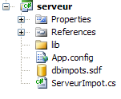

11. Programmation Internet
11.1. Généralités
11.1.1. Les protocoles de l'Internet
Nous donnons ici une introduction aux protocoles de communication de l'Internet, appelés aussi suite de protocoles TCP/IP (Transfer Control Protocol / Internet Protocol), du nom des deux principaux protocoles. Il peut être utile que le lecteur ait une compréhension globale du fonctionnement des réseaux et notamment des protocoles TCP/IP avant d'aborder la construction d'applications distribuées. Le texte qui suit est une traduction partielle d'un texte que l'on trouve dans le document "Lan Workplace for Dos - Administrator's Guide" de NOVELL, document du début des années 90.
Le concept général de créer un réseau d'ordinateurs hétérogènes vient de recherches effectuées par le DARPA (Defense Advanced Research Projects Agency) aux Etats-Unis. Le DARPA a développé la suite de protocoles connue sous le nom de TCP/IP qui permet à des machines hétérogènes de communiquer entre elles. Ces protocoles ont été testés sur un réseau appelé ARPAnet, réseau qui devint ultérieurement le réseau INTERNET. Les protocoles TCP/IP définissent des formats et des règles de transmission et de réception indépendants de l'organisation des réseaux et des matériels utilisés.
Le réseau conçu par le DARPA et géré par les protocoles TCP/IP est un réseau à commutation de paquets. Un tel réseau transmet l'information sur le réseau, en petits morceaux appelés paquets. Ainsi, si un ordinateur transmet un gros fichier, ce dernier sera découpé en petits morceaux qui seront envoyés sur le réseau pour être recomposés à destination. TCP/IP définit le format de ces paquets, à savoir :
- origine du paquet
- destination
- longueur
- type
11.1.2. Le modèle OSI
Les protocoles TCP/IP suivent à peu près le modèle de réseau ouvert appelé OSI (Open Systems Interconnection Reference Model) défini par l'ISO (International Standards Organisation). Ce modèle décrit un réseau idéal où la communication entre machines peut être représentée par un modèle à sept couches :
 |
Chaque couche reçoit des services de la couche inférieure et offre les siens à la couche supérieure. Supposons que deux applications situées sur des machines A et B différentes veulent communiquer : elles le font au niveau de la couche Application. Elles n'ont pas besoin de connaître tous les détails du fonctionnement du réseau : chaque application remet l'information qu'elle souhaite transmettre à la couche du dessous : la couche Présentation. L'application n'a donc à connaître que les règles d'interfaçage avec la couche Présentation.
Une fois l'information dans la couche Présentation, elle est passée selon d'autres règles à la couche Session et ainsi de suite, jusqu'à ce que l'information arrive sur le support physique et soit transmise physiquement à la machine destination. Là, elle subira le traitement inverse de celui qu'elle a subi sur la machine expéditeur.
A chaque couche, le processus expéditeur chargé d'envoyer l'information, l'envoie à un processus récepteur sur l'autre machine apartenant à la même couche que lui. Il le fait selon certaines règles que l'on appelle le protocole de la couche. On a donc le schéma de communication final suivant :
 |
Le rôle des différentes couches est le suivant :
Assure la transmission de bits sur un support physique. On trouve dans cette couche des équipements terminaux de traitement des données (E.T.T.D.) tels que terminal ou ordinateur, ainsi que des équipements de terminaison de circuits de données (E.T.C.D.) tels que modulateur/démodulateur, multiplexeur, concentrateur. Les points d'intérêt à ce niveau sont : • le choix du codage de l'information (analogique ou numérique) • le choix du mode de transmission (synchrone ou asynchrone). | |||
Masque les particularités physiques de la couche Physique. Détecte et corrige les erreurs de transmission. | |||
Gère le chemin que doivent suivre les informations envoyées sur le réseau. On appelle cela le routage : déterminer la route à suivre par une information pour qu'elle arrive à son destinataire. | |||
Permet la communication entre deux applications alors que les couches précédentes ne permettaient que la communication entre machines. Un service fourni par cette couche peut être le multiplexage : la couche transport pourra utiliser une même connexion réseau (de machine à machine) pour transmettre des informations appartenant à plusieurs applications. | |||
On va trouver dans cette couche des services permettant à une application d'ouvrir et de maintenir une session de travail sur une machine distante. | |||
Elle vise à uniformiser la représentation des données sur les différentes machines. Ainsi des données provenant d'une machine A, vont être "habillées" par la couche Présentation de la machine A, selon un format standard avant d'être envoyées sur le réseau. Parvenues à la couche Présentation de la machine destinatrice B qui les reconnaîtra grâce à leur format standard, elles seront habillées d'une autre façon afin que l'application de la machine B les reconnaisse. | |||
A ce niveau, on trouve les applications généralement proches de l'utilisateur telles que la messagerie électronique ou le transfert de fichiers. |
11.1.3. Le modèle TCP/IP
Le modèle OSI est un modèle idéal encore jamais réalisé. La suite de protocoles TCP/IP s'en approche sous la forme suivante :
 |
Couche Physique
En réseau local, on trouve généralement une technologie Ethernet ou Token-Ring. Nous ne présentons ici que la technologie Ethernet.
Ethernet
C'est le nom donné à une technologie de réseaux locaux à commutation de paquets inventée à PARC Xerox au début des années 1970 et normalisée par Xerox, Intel et Digital Equipment en 1978. Le réseau est physiquement constitué d'un câble coaxial d'environ 1,27 cm de diamètre et d'une longueur de 500 m au plus. Il peut être étendu au moyen de répéteurs, deux machines ne pouvant être séparées par plus de deux répéteurs. Le câble est passif : tous les éléments actifs sont sur les machines raccordées au câble. Chaque machine est reliée au câble par une carte d'accès au réseau comprenant :
- un transmetteur (transceiver) qui détecte la présence de signaux sur le câble et convertit les signaux analogiques en signaux numérique et inversement.
-
un coupleur qui reçoit les signaux numériques du transmetteur et les transmet à l'ordinateur pour traitement ou inversement. Les caractéristiques principales de la technologie Ethernet sont les suivantes :
-
Capacité de 10 Mégabits/seconde.
- Topologie en bus : toutes les machines sont raccordées au même câble
 |
- Réseau diffusant - Une machine qui émet transfère des informations sur le câble avec l'adresse de la machine destinatrice. Toutes les machines raccordées reçoivent alors ces informations et seule celle à qui elles sont destinées les conserve.
- La méthode d'accès est la suivante : le transmetteur désirant émettre écoute le câble - il détecte alors la présence ou non d'une onde porteuse, présence qui signifierait qu'une transmission est en cours. C'est la technique CSMA (Carrier Sense Multiple Access). En l'absence de porteuse, un transmetteur peut décider de transmettre à son tour. Ils peuvent être plusieurs à prendre cette décision. Les signaux émis se mélangent : on dit qu'il y a collision. Le transmetteur détecte cette situation : en même temps qu'il émet sur le câble, il écoute ce qui passe réellement sur celui-ci. S'il détecte que l'information transitant sur le câble n'est pas celle qu'il a émise, il en déduit qu'il y a collision et il s'arrêtera d'émettre. Les autres transmetteurs qui émettaient feront de même. Chacun reprendra son émission après un temps aléatoire dépendant de chaque transmetteur. Cette technique est appelée CD (Collision Detect). La méthode d'accès est ainsi appelée CSMA/CD.
- un adressage sur 48 bits. Chaque machine a une adresse, appelée ici adresse physique, qui est inscrite sur la carte qui la relie au câble. On appelle cet adresse, l'adresse Ethernet de la machine. Couche Réseau
Nous trouvons au niveau de cette couche, les protocoles IP, ICMP, ARP et RARP.
Délivre des paquets entre deux noeuds du réseau | |||
ICMP réalise la communication entre le programme du protocole IP d'une machine et celui d'une autre machine. C'est donc un protocole d'échange de messages à l'intérieur même du protocole IP. | |||
fait la correspondance adresse Internet machine--> adresse physique machine | |||
fait la correspondance adresse physique machine--> adresse Internet machine |
Couches Transport/Session
Dans cette couche, on trouve les protocoles suivants :
Assure une remise fiable d'informations entre deux clients | |||
Assure une remise non fiable d'informations entre deux clients |
Couches Application/Présentation/Session
On trouve ici divers protocoles :
Emulateur de terminal permettant à une machine A de se connecter à une machine B en tant que terminal | |||
permet des transferts de fichiers | |||
permet des transferts de fichiers | |||
permet l'échange de messages entre utilisateurs du réseau | |||
transforme un nom de machine en adresse Internet de la machine | |||
créé par sun MicroSystems, il spécifie une représentation standard des données, indépendante des machines | |||
défini également par Sun, c'est un protocole de communication entre applications distantes, indépendant de la couche transport. Ce protocole est important : il décharge le programmeur de la connaissance des détails de la couche transport et rend les applications portables. Ce protocole s'appuie sur sur le protocole XDR | |||
toujours défini par Sun, ce protocole permet à une machine, de "voir" le système de fichiers d'une autre machine. Il s'appuie sur le protocole RPC précédent |
11.1.4. Fonctionnement des protocoles de l'Internet
Les applications développées dans l'environnement TCP/IP utilisent généralement plusieurs des protocoles de cet environnement. Un programme d'application communique avec la couche la plus élevée des protocoles. Celle-ci passe l'information à la couche du dessous et ainsi de suite jusqu'à arriver sur le support physique. Là, l'information est physiquement transférée à la machine destinatrice où elle retraversera les mêmes couches, en sens inverse cette fois-ci, jusqu'à arriver à l'application destinatrice des informations envoyées. Le schéma suivant montre le parcours de l'information :
 |
Prenons un exemple : l'application FTP, définie au niveau de la couche Application et qui permet des transferts de fichiers entre machines.
- L'application délivre une suite d'octets à transmettre à la couche transport.
- La couche transport découpe cette suite d'octets en segments TCP, et ajoute au début de chaque segment, le numéro de celui-ci. Les segments sont passés à la couche Réseau gouvernée par le protocole IP.
- La couche IP crée un paquet encapsulant le segment TCP reçu. En tête de ce paquet, elle place les adresses Internet des machines source et destination. Elle détermine également l'adresse physique de la machine destinatrice. Le tout est passé à la couche Liaison de données & Liaison physique, c'est à dire à la carte réseau qui couple la machine au réseau physique.
- Là, le paquet IP est encapsulé à son tour dans une trame physique et envoyé à son destinataire sur le câble.
- Sur la machine destinatrice, la couche Liaison de données & Liaison physique fait l'inverse : elle désencapsule le paquet IP de la trame physique et le passe à la couche IP.
- La couche IP vérifie que le paquet est correct : elle calcule une somme, fonction des bits reçus (checksum), somme qu'elle doit retrouver dans l'en-tête du paquet. Si ce n'est pas le cas, celui-ci est rejeté.
- Si le paquet est déclaré correct, la couche IP désencapsule le segment TCP qui s'y trouve et le passe au-dessus à la couche transport.
- La couche transport, couche TCP dans notre exemple, examine le numéro du segment afin de restituer le bon ordre des segments.
- Elle calcule également une somme de vérification pour le segment TCP. S'il est trouvé correct, la couche TCP envoie un accusé de réception à la machine source, sinon le segment TCP est refusé.
- Il ne reste plus à la couche TCP qu'à transmettre la partie données du segment à l'application destinatrice de celles-ci dans la couche du dessus.
11.1.5. Les problèmes d'adressage dans l'Internet
Un noeud d'un réseau peut être un ordinateur, une imprimante intelligente, un serveur de fichiers, n'importe quoi en fait pouvant communiquer à l'aide des protocoles TCP/IP. Chaque noeud a une adresse physique ayant un format dépendant du type du réseau. Sur un réseau Ethernet, l'adresse physique est codée sur 6 octets. Une adresse d'un réseau X25 est un nombre à 14 chiffres.
L'adresse Internet d'un noeud est une adresse logique : elle est indépendante du matériel et du réseau utilisé. C'est une adresse sur 4 octets identifiant à la fois un réseau local et un noeud de ce réseau. L'adresse Internet est habituellement représentée sous la forme de 4 nombres, valeurs des 4 octets, séparés par un point. Ainsi l'adresse de la machine Lagaffe de la faculté des Sciences d'Angers est notée 193.49.144.1 et celle de la machine Liny 193.49.144.9. On en déduira que l'adresse Internet du réseau local est 193.49.144.0. On pourra avoir jusqu'à 254 noeuds sur ce réseau.
Parce que les adresses Internet ou adresses IP sont indépendantes du réseau, une machine d'un réseau A peut communiquer avec une machine d'un réseau B sans se préoccuper du type de réseau sur lequel elle se trouve : il suffit qu'elle connaisse son adresse IP. Le protocole IP de chaque réseau se charge de faire la conversion adresse IP <--> adresse physique, dans les deux sens.
Les adresses IP doivent être toutes différentes. En France, c'est l'INRIA qui s'occupe d'affecter les adresses IP. En fait, cet organisme délivre une adresse pour votre réseau local, par exemple 193.49.144.0 pour le réseau de la faculté des sciences d'Angers. L'administrateur de ce réseau peut ensuite affecter les adresses IP 193.49.144.1 à 193.49.144.254 comme il l'entend. Cette adresse est généralement inscrite dans un fichier particulier de chaque machine reliée au réseau.
11.1.5.1. Les classes d'adresses IP
Une adresse IP est une suite de 4 octets notée souvent I1.I2.I3.I4, qui contient en fait deux adresses :
- l'adresse du réseau
- l'adresse d'un noeud de ce réseau Selon la taille de ces deux champs, les adresses IP sont divisées en 3 classes : classes A, B et C.
Classe A
L'adresse IP : I1.I2.I3.I4 a la forme R1.N1.N2.N3 où
R1 est l'adresse du réseau
N1.N2.N3 est l'adresse d'une machine dans ce réseau
Plus exactement, la forme d'une adresse IP de classe A est la suivante :
 |
L'adresse réseau est sur 7 bits et l'adresse du noeud sur 24 bits. On peut donc avoir 127 réseaux de classe A, chacun comportant jusqu'à 224 noeuds.
Classe B
Ici, l'adresse IP : I1.I2.I3.I4 a la forme R1.R2.N1.N2 où
R1.R2 est l'adresse du réseau
N1.N2 est l'adresse d'une machine dans ce réseau
Plus exactement, la forme d'une adresse IP de classe B est la suivante :
 |
L'adresse du réseau est sur 2 octets (14 bits exactement) ainsi que celle du noeud. On peut donc avoir 214 réseaux de classe B chacun comportant jusqu'à 216 noeuds.
Classe C
Dans cette classe, l'adresse IP : I1.I2.I3.I4 a la forme R1.R2.R3.N1 où
R1.R2.R3 est l'adresse du réseau
N1 est l'adresse d'une machine dans ce réseau
Plus exactement, la forme d'une adresse IP de classe C est la suivante :
 |
L'adresse réseau est sur 3 octets (moins 3 bits) et l'adresse du noeud sur 1 octet. On peut donc avoir 221 réseaux de classe C comportant jusqu'à 256 noeuds.
L'adresse de la machine Lagaffe de la faculté des sciences d'Angers étant 193.49.144.1, on voit que l'octet de poids fort vaut 193, c'est à dire en binaire 11000001. On en déduit que le réseau est de classe C.
Adresses réservées
- Certaines adresses IP sont des adresses de réseaux plutôt que des adresses de noeuds dans le réseau. Ce sont celles, où l'adresse du noeud est mise à 0. Ainsi, l'adresse 193.49.144.0 est l'adresse IP du réseau de la Faculté des Sciences d'Angers. En conséquence, aucun noeud d'un réseau ne peut avoir l'adresse zéro.
- Lorsque dans une adresse IP, l'adresse du noeud ne comporte que des 1, on a alors une adresse de diffusion : cette adresse désigne tous les noeuds du réseau.
- Dans un réseau de classe C, permettant théoriquement 28=256 noeuds, si on enlève les deux adresses interdites, on n'a plus que 254 adresses autorisées.
11.1.5.2. Les protocoles de conversion Adresse Internet <--> Adresse physique
Nous avons vu que lors d'une émission d'informations d'une machine vers une autre, celles-ci à la traversée de la couche IP étaient encapsulées dans des paquets. Ceux-ci ont la forme suivante :
 |
Le paquet IP contient donc les adresses Internet des machines source et destination. Lorsque ce paquet va être transmis à la couche chargée de l'envoyer sur le réseau physique, d'autres informations lui sont ajoutées pour former la trame physique qui sera finalement envoyée sur le réseau. Par exemple, le format d'une trame sur un réseau Ethernet est le suivant :
 |
Dans la trame finale, il y a l'adresse physique des machines source et destination. Comment sont-elles obtenues ?
La machine expéditrice connaissant l'adresse IP de la machine avec qui elle veut communiquer obtient l'adresse physique de celle-ci en utilisant un protocole particulier appelé ARP (Address Resolution Protocol).
- Elle envoie un paquet d'un type spécial appelé paquet ARP contenant l'adresse IP de la machine dont on cherche l'adresse physique. Elle a pris soin également d'y placer sa propre adresse IP ainsi que son adresse physique.
- Ce paquet est envoyé à tous les noeuds du réseau.
- Ceux-ci reconnaissent la nature spéciale du paquet. Le noeud qui reconnaît son adresse IP dans le paquet, répond en envoyant à l'expéditeur du paquet son adresse physique. Comment le peut-il ? Il a trouvé dans le paquet les adresses IP et physique de l'expéditeur.
- L'expéditeur reçoit donc l'adresse physique qu'il cherchait. Il la stocke en mémoire afin de pouvoir l'utiliser ultérieurement si d'autres paquets sont à envoyer au même destinataire. L'adresse IP d'une machine est normalement inscrite dans l'un de ses fichiers qu'elle peut donc consulter pour la connaître. Cette adresse peut être changée : il suffit d'éditer le fichier. L'adresse physique elle, est inscrite dans une mémoire de la carte réseau et ne peut être changée.
Lorsqu'un administrateur désire d'organiser son réseau différemment, il peut être amené à changer les adresses IP de tous les noeuds et donc à éditer les différents fichiers de configuration des différents noeuds. Cela peut être fastidieux et une occasion d'erreurs s'il y a beaucoup de machines. Une méthode consiste à ne pas affecter d'adresse IP aux machines : on inscrit alors un code spécial dans le fichier dans lequel la machine devrait trouver son adresse IP. Découvrant qu'elle n'a pas d'adresse IP, la machine la demande selon un protocole appelé RARP (Reverse Address Resolution Protocol). Elle envoie alors sur un réseau un paquet spécial appelé paquet RARP, analogue au paquet ARP précédent, dans lequel elle met son adresse physique. Ce paquet est envoyé à tous les noeuds qui reconnaissent alors un paquet RARP. L'un d'entre-eux, appelé serveur RARP, possède un fichier donnant la correspondance adresse physique <--> adresse IP de tous les noeuds. Il répond alors à l'expéditeur du paquet RARP, en lui renvoyant son adresse IP. Un administrateur désirant reconfigurer son réseau, n'a donc qu'à éditer le fichier de correspondances du serveur RARP. Celui-ci doit normalement avoir une adresse IP fixe qu'il doit pouvoir connaître sans avoir à utiliser lui-même le protocole RARP.
11.1.6. La couche réseau dite couche IP de l'internet
Le protocole IP (Internet Protocol) définit la forme que les paquets doivent prendre et la façon dont ils doivent être gérés lors de leur émission ou de leur réception. Ce type de paquet particulier est appelé un datagramme IP. Nous l'avons déjà présenté :
 |
L'important est qu'outre les données à transmettre, le datagramme IP contient les adresses Internet des machines source et destination. Ainsi la machine destinatrice sait qui lui envoie un message.
A la différence d'une trame de réseau qui a une longueur déterminée par les caractéristiques physiques du réseau sur lequel elle transite, la longueur du datagramme IP est elle fixée par le logiciel et sera donc la même sur différents réseaux physiques. Nous avons vu qu'en descendant de la couche réseau dans la couche physique le datagramme IP était encapsulé dans une trame physique. Nous avons donné l'exemple de la trame physique d'un réseau Ethernet :
 |
Les trames physiques circulent de noeud en noeud vers leur destination qui peut ne pas être sur le même réseau physique que la machine expéditrice. Le paquet IP peut donc être encapsulé successivement dans des trames physiques différentes au niveau des noeuds qui font la jonction entre deux réseaux de type différent. Il se peut aussi que le paquet IP soit trop grand pour être encapsulé dans une trame physique. Le logiciel IP du noeud où se pose ce problème, décompose alors le paquet IP en fragments selon des règles précises, chacun d'eux étant ensuite envoyé sur le réseau physique. Ils ne seront réassemblés qu'à leur ultime destination.
11.1.6.1. Le routage
Le routage est la méthode d'acheminement des paquets IP à leur destination. Il y a deux méthodes : le routage direct et le routage indirect.
Routage direct
Le routage direct désigne l'acheminement d'un paquet IP directement de l'expéditeur au destinataire à l'intérieur du même réseau :
- La machine expéditrice d'un datagramme IP a l'adresse IP du destinataire.
- Elle obtient l'adresse physique de ce dernier par le protocole ARP ou dans ses tables, si cette adresse a déjà été obtenue.
- Elle envoie le paquet sur le réseau à cette adresse physique. Routage indirect
Le routage indirect désigne l'acheminement d'un paquet IP à une destination se trouvant sur un autre réseau que celui auquel appartient l'expéditeur. Dans ce cas, les parties adresse réseau des adresses IP des machines source et destination sont différentes. La machine source reconnaît ce point. Elle envoie alors le paquet à un noeud spécial appelé routeur (router), noeud qui connecte un réseau local aux autres réseaux et dont elle trouve l'adresse IP dans ses tables, adresse obtenue initialement soit dans un fichier soit dans une mémoire permanente ou encore via des informations circulant sur le réseau.
Un routeur est attaché à deux réseaux et possède une adresse IP à l'intérieur de ces deux réseaux.
 |
Dans notre exemple ci-dessus :
. Le réseau n° 1 a l'adresse Internet 193.49.144.0 et le réseau n° 2 l'adresse 193.49.145.0.
. A l'intérieur du réseau n° 1, le routeur a l'adresse 193.49.144.6 et l'adresse 193.49.145.3 à l'intérieur du réseau n° 2.
Le routeur a pour rôle de mettre le paquet IP qu'il reçoit et qui est contenu dans une trame physique typique du réseau n° 1, dans une trame physique pouvant circuler sur le réseau n° 2. Si l'adresse IP du destinataire du paquet est dans le réseau n° 2, le routeur lui enverra le paquet directement sinon il l'enverra à un autre routeur, connectant le réseau n° 2 à un réseau n° 3 et ainsi de suite.
11.1.6.2. Messages d'erreur et de contrôle
Toujours dans la couche réseau, au même niveau donc que le protocole IP, existe le protocole ICMP (Internet Control Message Protocol). Il sert à envoyer des messages sur le fonctionnement interne du réseau : noeuds en panne, embouteillage à un routeur, etc ... Les messages ICMP sont encapsulés dans des paquets IP et envoyés sur le réseau. Les couches IP des différents noeuds prennent les actions appropriées selon les messages ICMP qu'elles reçoivent. Ainsi, une application elle-même, ne voit jamais ces problèmes propres au réseau.
Un noeud utilisera les informations ICMP pour mettre à jour ses tables de routage.
11.1.7. La couche transport : les protocoles UDP et TCP
11.1.7.1. Le protocole UDP : User Datagram Protocol
Le protocole UDP permet un échange non fiable de données entre deux points, c'est à dire que le bon acheminement d'un paquet à sa destination n'est pas garanti. L'application, si elle le souhaite peut gérer cela elle-même, en attendant par exemple après l'envoi d'un message, un accusé de réception, avant d'envoyer le suivant.
Pour l'instant, au niveau réseau, nous avons parlé d'adresses IP de machines. Or sur une machine, peuvent coexister en même temps différents processus qui tous peuvent communiquer. Il faut donc indiquer, lors de l'envoi d'un message, non seulement l'adresse IP de la machine destinatrice, mais également le "nom" du processus destinataire. Ce nom est en fait un numéro, appelé numéro de port. Certains numéros sont réservés à des applications standard : port 69 pour l'application tftp (trivial file transfer protocol) par exemple.
Les paquets gérés par le protocole UDP sont appelés également des datagrammes. Ils ont la forme suivante :
 |
Ces datagrammes seront encapsulés dans des paquets IP, puis dans des trames physiques.
11.1.7.2. Le protocole TCP : Transfer Control Protocol
Pour des communications sûres, le protocole UDP est insuffisant : le développeur d'applications doit élaborer lui-même un protocole lui permettant de détecter le bon acheminement des paquets. Le protocole TCP (Transfer Control Protocol) évite ces problèmes. Ses caractéristiques sont les suivantes :
- Le processus qui souhaite émettre établit tout d'abord une connexion avec le processus destinataire des informations qu'il va émettre. Cette connexion se fait entre un port de la machine émettrice et un port de la machine réceptrice. Il y a entre les deux ports un chemin virtuel qui est ainsi créé et qui sera réservé aux deux seuls processus ayant réalisé la connexion.
- Tous les paquets émis par le processus source suivent ce chemin virtuel et arrivent dans l'ordre où ils ont été émis ce qui n'était pas garanti dans le protocole UDP puisque les paquets pouvaient suivre des chemins différents.
- L'information émise a un aspect continu. Le processus émetteur envoie des informations à son rhythme. Celles-ci ne sont pas nécessairement envoyées tout de suite : le protocole TCP attend d'en avoir assez pour les envoyer. Elles sont stockées dans une structure appelée segment TCP. Ce segment une fois rempli sera transmis à la couche IP où il sera encapsulé dans un paquet IP.
- Chaque segment envoyé par le protocole TCP est numéroté. Le protocole TCP destinataire vérifie qu'il reçoit bien les segments en séquence. Pour chaque segment correctement reçu, il envoie un accusé de réception à l'expéditeur.
- Lorsque ce dernier le reçoit, il l'indique au processus émetteur. Celui-ci peut donc savoir qu'un segment est arrivé à bon port, ce qui n'était pas possible avec le protocole UDP.
- Si au bout d'un certain temps, le protocole TCP ayant émis un segment ne reçoit pas d'accusé de réception, il retransmet le segment en question, garantissant ainsi la qualité du service d'acheminement de l'information.
- Le circuit virtuel établi entre les deux processus qui communiquent est full-duplex : cela signifie que l'information peut transiter dans les deux sens. Ainsi le processus destination peut envoyer des accusés de réception alors même que le processus source continue d'envoyer des informations. Cela permet par exemple au protocole TCP source d'envoyer plusieurs segments sans attendre d'accusé de réception. S'il réalise au bout d'un certain temps qu'il n'a pas reçu l'accusé de réception d'un certain segment n° n, il reprendra l'émission des segments à ce point.
11.1.8. La couche Applications
Au-dessus des protocoles UDP et TCP, existent divers protocoles standard :
TELNET
1 | |
FTP : (File Transfer protocol)
1 | |
TFTP: (Trivial File Transfer Control)
1 | |
DNS : (Domain Name System)
1 2 3 4 5 6 7 8 9 10 11 12 13 14 15 16 17 18 19 20 21 22 23 | |
- si la machine B appartient au même domaine que la machine A, on trouvera probablement son adresse IP dans un fichier de la machine A.
-
sinon, la machine A trouvera dans un autre fichier ou le même que précédemment, une liste de quelques serveurs de noms avec leurs adresses IP. Un serveur de noms est chargé de faire la correspondance entre un nom de machine et son adresse IP. La machine A va envoyer une requête spéciale au premier serveur de nom de sa liste, appelé requête DNS incluant donc le nom de la machine recherchée. Si le serveur interrogé a ce nom dans ses tablettes, il enverra à la machine A, l'adresse IP correspondante. Sinon, le serveur trouvera lui aussi dans ses fichiers, une liste de serveurs de noms qu'il peut interroger. Il le fera alors. Ainsi un certain nombre de serveurs de noms vont être interrogés, pas de façon anarchique mais d'une façon à minimiser les requêtes. Si la machine est finalement trouvée, la réponse redescendra jusqu'à la machine A. XDR : (eXternal Data Representation)
Créé par sun MicroSystems, ce protocole spécifie une représentation standard des données, indépendante des machines.
RPC : (Remote Procedure Call)
1 | |
NFS : Network File System
1 | |
11.1.9. Conclusion
Nous avons présenté dans cette introduction quelques grandes lignes des protocoles Internet. Pour approfondir ce domaine, on pourra lire l'excellent livre de Douglas Comer :
Titre TCP/IP : Architecture, Protocoles, Applications.
Auteur Douglas COMER
Editeur InterEditions
11.2. Les classes .NET de la gestion des adresses IP
Une machine sur le réseau Internet est définie de façon unique par une adresse IP (Internet Protocol) qui peut prendre deux formes :
- IPv4 : codée sur 32 bits et représentée par une chaîne de la forme "I1.I2.I3.I4" où In est un nombre entre 1 et 254. Ce sont les adresses IP les plus courantes actuellement.
- IPv6 : codée sur 128 bits et représentée par une chaîne de la forme "[I1.I2.I3.I4.I5.I6.I7.I8]" où In est une chaîne de 4 chiffres hexadécimaux. Dans ce document, nous n'utiliserons pas les adresses IPv6. Une machine peut être aussi définie par un nom également unique. Ce nom n'est pas obligatoire, les applications utilisant toujours au final les adresses IP des machines. lls sont là pour faciliter la vie des utilisateurs. Ainsi il est plus facile, avec un navigateur, de demander l'URL http://www.ibm.com que l'URL http://129.42.17.99 bien que les deux méthodes soient possibles.
Une machine peut avoir plusieurs adresses IP si elle est physiquement connectée à plusieurs réseaux en même temps. Elle a alors une adresse IP sur chaque réseau.
Une adresse IP peut être représentée de deux façons dans .NET :
- sous la forme d'une chaîne de caractères "I1.I2.I3.I4" ou "[I1.I2.I3.I4.I5.I6.I7.I8]"
- sous la forme d'un objet de type IPAddress La classe IPAddress
Parmi les méthodes M, propriétés P et constantes C de la classe IPAddress, on trouve les suivantes :
P | famille de l'adresse IP. Le type AddressFamily est une énumération. Les deux valeurs courantes sont : AddressFamily.InterNetwork : pour une adresse IPv4 AddressFamily.InterNetworkV6 : pour une adresse IPv6 | |||
C | l'adresse IP "0.0.0.0". Lorsqu'un service est associé à cette adresse, cela signifie qu'il accepte des clients sur toutes les adresses IP de la machine sur laquelle il opère. | |||
C | l'adresse IP "127.0.0.1". Appelée "adresse de boucle". Lorsqu'un service est associé à cette adresse, cela signifie qu'il n'accepte que les clients qui sont sur la même machine que lui. | |||
C | l'adresse IP "255.255.255.255". Lorsqu'un service est associé à cette adresse, cela signifie qu'il n'accepte aucun client. | |||
M | essaie de passer l'adresse IP ipString de forme "I1.I2.I3.I4" sous la forme d'un objet IPAddress address. Rend true si l'opération a réussi. | |||
M | rend true si l'adresse IP est "127.0.0.1" | |||
M | rend l'adrresse IP sous la forme "I1.I2.I3.I4" ou "[I1.I2.I3.I4.I5.I6.I7.I8]" |
L'association adresse IP <--> nomMachine est assurée par un service distribué de l'internet appelé DNS (Domain Name System). Les méthodes statiques de la classe Dns permettent de faire l'association adresse IP <--> nomMachine :
rend une adresse IPHostEntry à partir d'une adresse IP sous la forme d'une chaîne ou à partir d'un nom de machine. Lance une exception si la machine ne peut être trouvée. | |||
rend une adresse IPHostEntry à partir d'une adresse IP de type IPAddress. Lance une exception si la machine ne peut être trouvée. | |||
rend le nom de la machine sur laquelle s'exécute le programme qui joue cette instruction | |||
rend les adresses IP de la machine identifiée par son nom ou l'une de ses adresses IP. |
Une instance IPHostEntry encapsule les adresses IP, les alias et le nom d'une machine. Le type IPHostEntry est le suivant :
P | tableau des adresses IP de la machine | |||
P | les alias DNS de la machine. Ceux-ci sont les noms correspondant aux différentes adresses IP de la machine. | |||
P | le nom d'hôte principal de la machine |
Considérons le programme suivant qui affiche le nom de la machine sur laquelle il s'exécute puis de façon interactive donne les correspondances adresse IP <--> nom Machine :
L'exécution donne les résultats suivants :
11.3. Les bases de la programmation internet
11.3.1. Généralités
Considérons la communication entre deux machines distantes A et B :
 |
Lorsque une application AppA d'une machine A veut communiquer avec une application AppB d'une machine B de l'Internet, elle doit connaître plusieurs choses :
- l'adresse IP ou le nom de la machine B
- le numéro du port avec lequel travaille l'application AppB. En effet la machine B peut supporter de nombreuses applications qui travaillent sur l'Internet. Lorsqu'elle reçoit des informations provenant du réseau, elle doit savoir à quelle application sont destinées ces informations. Les applications de la machine B ont accès au réseau via des guichets appelés également des ports de communication. Cette information est contenue dans le paquet reçu par la machine B afin qu'il soit délivré à la bonne application.
- les protocoles de communication compris par la machine B. Dans notre étude, nous utiliserons uniquement les protocoles TCP-IP.
- le protocole de dialogue accepté par l'application AppB. En effet, les machines A et B vont se "parler". Ce qu'elles vont dire va être encapsulé dans les protocoles TCP-IP. Néanmoins, lorsqu'au bout de la chaîne, l'application AppB va recevoir l'information envoyée par l'applicaton AppA, il faut qu'elle soit capable de l'interpréter. Ceci est analogue à la situation où deux personnes A et B communiquent par téléphone : leur dialogue est transporté par le téléphone. La parole va être codée sous forme de signaux par le téléphone A, transportée par des lignes téléphoniques, arriver au téléphone B pour y être décodée. La personne B entend alors des paroles. C'est là qu'intervient la notion de protocole de dialogue : si A parle français et que B ne comprend pas cette langue, A et B ne pourront dialoguer utilement. Aussi les deux applications communicantes doivent -elles être d'accord sur le type de dialogue qu'elles vont adopter. Par exemple, le dialogue avec un service ftp n'est pas le même qu'avec un service pop : ces deux services n'acceptent pas les mêmes commandes. Elles ont un protocole de dialogue différent.
11.3.2. Les caractéristiques du protocole TCP
Nous n'étudierons ici que des communications réseau utilisant le protocole de transport TCP. Rappelons ici, les caractéristiques de celui-ci :
- Le processus qui souhaite émettre établit tout d'abord une connexion avec le processus destinataire des informations qu'il va émettre. Cette connexion se fait entre un port de la machine émettrice et un port de la machine réceptrice. Il y a entre les deux ports un chemin virtuel qui est ainsi créé et qui sera réservé aux deux seuls processus ayant réalisé la connexion.
- Tous les paquets émis par le processus source suivent ce chemin virtuel et arrivent dans l'ordre où ils ont été émis
- L'information émise a un aspect continu. Le processus émetteur envoie des informations à son rythme. Celles-ci ne sont pas nécessairement envoyées tout de suite : le protocole TCP attend d'en avoir assez pour les envoyer. Elles sont stockées dans une structure appelée segment TCP. Ce segment une fois rempli sera transmis à la couche IP où il sera encapsulé dans un paquet IP.
- Chaque segment envoyé par le protocole TCP est numéroté. Le protocole TCP destinataire vérifie qu'il reçoit bien les segments en séquence. Pour chaque segment correctement reçu, il envoie un accusé de réception à l'expéditeur.
- Lorsque ce dernier le reçoit, il l'indique au processus émetteur. Celui-ci peut donc savoir qu'un segment est arrivé à bon port.
- Si au bout d'un certain temps, le protocole TCP ayant émis un segment ne reçoit pas d'accusé de réception, il retransmet le segment en question, garantissant ainsi la qualité du service d'acheminement de l'information.
- Le circuit virtuel établi entre les deux processus qui communiquent est full-duplex : cela signifie que l'information peut transiter dans les deux sens. Ainsi le processus destination peut envoyer des accusés de réception alors même que le processus source continue d'envoyer des informations. Cela permet par exemple au protocole TCP source d'envoyer plusieurs segments sans attendre d'accusé de réception. S'il réalise au bout d'un certain temps qu'il n'a pas reçu l'accusé de réception d'un certain segment n° n, il reprendra l'émission des segments à ce point.
11.3.3. La relation client-serveur
Souvent, la communication sur Internet est dissymétrique : la machine A initie une connexion pour demander un service à la machine B : il précise qu'il veut ouvrir une connexion avec le service SB1 de la machine B. Celle-ci accepte ou refuse. Si elle accepte, la machine A peut envoyer ses demandes au service SB1. Celles-ci doivent se conformer au protocole de dialogue compris par le service SB1. Un dialogue demande-réponse s'instaure ainsi entre la machine A qu'on appelle machine cliente et la machine B qu'on appelle machine serveur. L'un des deux partenaires fermera la connexion.
11.3.4. Architecture d'un client
L'architecture d'un programme réseau demandant les services d'une application serveur sera la suivante :
11.3.5. Architecture d'un serveur
L'architecture d'un programme offrant des services sera la suivante :
Le programme serveur traite différemment la demande de connexion initiale d'un client de ses demandes ultérieures visant à obtenir un service. Le programme n'assure pas le service lui-même. S'il le faisait, pendant la durée du service il ne serait plus à l'écoute des demandes de connexion et des clients ne seraient alors pas servis. Il procède donc autrement : dès qu'une demande de connexion est reçue sur le port d'écoute puis acceptée, le serveur crée une tâche chargée de rendre le service demandé par le client. Ce service est rendu sur un autre port de la machine serveur appelé port de service. On peut ainsi servir plusieurs clients en même temps.
Une tâche de service aura la structure suivante :
11.4. Découvrir les protocoles de communication de l'internet
11.4.1. Introduction
Lorsqu'un client s'est connecté à un serveur, s'établit ensuite un dialogue entre-eux. La nature de celui-ci forme ce qu'on appelle le protocole de communication du serveur. Parmi les protocoles les plus courants de l'internet on trouve les suivants :
- HTTP : HyperText Transfer Protocol - le protocole de dialogue avec un serveur web (serveur HTTP)
- SMTP : Simple Mail Transfer Protocol - le protocole de dialogue avec un serveur d'envoi de courriers électroniques (serveur SMTP)
- POP : Post Office Protocol - le protocole de dialogue avec un serveur de stockage du courrier électronique (serveur POP). Il s'agit là de récupérer les courriers électroniques reçus et non d'en envoyer.
-
FTP : File Transfer Protocol - le protocole de dialogue avec un serveur de stockage de fichiers (serveur FTP). Tous ces protocoles ont la particularité d'être des protocoles à lignes de texte : le client et le serveur s'échangent des lignes de texte. Si on a un client capable de :
-
créer une connexion avec un serveur Tcp
- afficher à la console les lignes de texte que le serveur lui envoie
- envoyer au serveur les lignes de texte qu'un utilisateur saisirait alors on est capable de dialoguer avec un serveur Tcp ayant un protocole à lignes de texte pour peu qu'on connaisse les règles de ce protocole.
Le programme telnet qu'on trouve sur les machines Unix ou Windows est un tel client. Sur les machines Windows, on trouve également un outil appelé putty et c'est lui que nous allons utiliser ici. putty est téléchargeable à l'adresse [http://www.putty.org/]. C'est un exécutable (.exe) directement utilisable. Nous le configurerons de la façon suivante :
 |
- [1] : l'adresse IP du serveur Tcp auquel on veut se connceter ou son nom
- [2] : le port d'écoute du serveur Tcp
- [3] : prendre le mode Raw qui désigne une connexion Tcp brute.
- [4] : prendre le mode Never pour empêcher la fenêtre du client putty de se fermer si le serveur ferme la connexion.
- [6,7] : nombre de colonnes / lignes de la console
- [5] : le nombre maximal de lignes conservées en mémoire. Un serveur HTTP peut envoyer beaucoup de lignes. Il faut pouvoir "scroller" dessus.
 |
- [8,9] : pour conserver les paramètres précédents, donner un nom à la configuration [8] et la sauvegarder [9].
- [11,12] : pour récupérer une configuration sauvegardée, la sélectionner [11] et la charger [12]. Avec cet outil ainsi configuré, découvrons quelques protocoles TCP.
11.4.2. Le protocole HTTP (HyperText Transfer Protocol)
Connectons [1] notre client TCP sur le serveur web de la machine istia.univ-angers.fr [2], port 80 [3] :
 |
Dans la console de putty, nous construisons le dialogue HTTP suivant :
- les lignes 1-4 sont la demande du client, tapée au clavier
- les lignes 5-19 sont la réponse du serveur
- ligne 1 : syntaxe GET UrlDocument HTTP/1.1 - nous demandons l'Url /, c.a.d. la racine du site web [istia.univ-angers.fr].
- ligne 2 : syntaxe Host: machine:port
- ligne 3 : syntaxe Connection: [mode de la connexion]. Le mode [close] indique au serveur de fermer la connexion une fois qu'il aura envoyée sa réponse. Le mode [Keep-Alive] demande de la laisser ouverte.
- ligne 4 : ligne vide. Les lignes 1-3 sont appelées entêtes HTTP. Il peut y en avoir d'autres que ceux présentés ici. La fin des entêtes HTTP est signalée avec une ligne vide.
- lignes 5-13 : les entêtes HTTP de la réponse du serveur - se terminent là également par une ligne vide.
- lignes 14-19 : le document envoyé par le serveur, ici un document HTML
- ligne 5 : syntaxe HTTP/1.1 code msg - le code 200 indique que le document demandé a été trouvé.
- ligne 6 : les date et heure du serveur
- ligne 7 : identification logiciel assurant le service web - ici un serveur Apache sur un Linux / Debian
- ligne 8 : le document a été généré dynamiquement par PHP
- ligne 9 : cookie d'identification du client - si celui-ci veut se faire reconnaître à sa prochaine connexion, il devra renvoyer ce cookie dans ses entêtes HTTP.
- ligne 10 : indique qu'après avoir servi le document demandé, le serveur fermera la connexion
- ligne 11 : le document va être transmis par morceaux (chunked) et non d'un seul bloc.
- ligne 12 : nature du document : ici un document HTML
- ligne 13 : la ligne vide qui signale la fin des entêtes HTTP du serveur
- ligne 14 : nombre hexadécimal indiquant le nombre de caractères du 1er bloc du document. Lorsque ce nombre vaudra 0 (ligne 19), le client saura qu'il a reçu tout le document.
- lignes 15-18 : partie du document reçu. La connexion a été fermée et le client putty est inactif. Reconnectons-nous [1] et nettoyons l'écran des affichages précédents [2,3] :
 |
Le dialogue cette fois-ci est le suivant :
- ligne 1 : on a demandé un document inexistant
- ligne 5 : le serveur HTTP a répondu avec le code 404 signifiant que le document demandé n'a pas été trouvé. Si on demande ce document avec un navigateur Firefox :

Si nous demandons à voir le code source [Affichage/Code source] :
Nous obtenons les lignes 13-22 reçues par notre client putty. L'intérêt de celui-ci est de nous montrer en plus, les entêtes HTTP de la réponse. Il est également possible d'avoir ceux-ci avec Firefox.
11.4.3. Le protocole SMTP (Simple Mail Transfer Protocol)
 |
Les serveurs SMTP opèrent en général sur le port 25 [2]. On se connecte sur le serveur [1]. Ici, il faut en général prendre un serveur
appartenant au même domaine IP que la machine car le plus souvent les serveurs SMTP sont configurés pour n'accepter que les demandes des machines appartenant au même domaine qu'eux. Par ailleurs, assez souvent également, les pare-feu ou antivirus des machines personnelles sont configurés pour ne pas accepter de connexion vers le port 25 d'une machine extérieure. Il peut être alors nécessaire de reconfigurer [3] ce pare-feu ou antivirus.
Le dialogue SMTP dan la fenêtre du client putty est le suivant :
Ci-dessous (D) est une demande du client, (R) une réponse du serveur.
- ligne 1 : (R) message d'accueil du serveur SMTP
- ligne 2 : (D) commande HELO pour dire bonjour
- ligne 3 : (R) réponse du serveur
- ligne 4 : (D) adresse expéditeur, par exemple mail from: someone@gmail.com
- ligne 5 : (R) réponse du serveur
- ligne 6 : (D) adresse destinataire, par exemple rcpt to: someoneelse@gmail.com
- ligne 7 : (R) réponse du serveur
- ligne 8 : (D) signale le début du message
- ligne 9 : (R) réponse du serveur
- lignes 10-12 : (D) le message à envoyer terminé par une ligne contenant uniquement un point.
- ligne 13 : (R) réponse du serveur
- ligne 14 : (D) le client signale qu'il a terminé
- ligne 15 : (R) réponse du serveur qui ensuite ferme la connexion
11.4.4. Le protocole POP (Post Office Protocol)
 |
Les serveurs POP opèrent en général sur le port 110 [2]. On se connecte sur le serveur [1]. Le dialogue POP dans la fenêtre du client putty est le suivant :
- ligne 1 : (R) message de bienvenue du serveur POP
- ligne 2 : (D) le client donne son identifiant POP, c.a.d. le login avec lequel il lit son courrier
- ligne 3 : (R) la réponse du serveur
- ligne 4 : (D) le mot de passe du client
- ligne 5 : (R) la réponse du serveur
- ligne 6 : (D) le client demande la liste de ses courriers
- lignes 7-12 : (R) la liste des messages dans la boîte à lettre du client, sous la forme [N° du message taille en octets du message]
- ligne 13 : (D) on demande le message n° 64
- lignes 14-25 : (R) le message n° 64 avec lignes 15-22, les entêtes du message, et lignes 23-24 le corps du message.
- ligne 26 : (D) le client indique qu'il a fini
- ligne 27 : (R) réponse du serveur qui va ensuite fermer la connexion.
11.4.5. Le protocole FTP (File Transfer Protocol)
Le protocole FTP est plus complexe que ceux présentés précédemment. Pour découvrir les lignes de texte échangées entre le client et le serveur, on pourra utiliser un outil tel que FileZilla [http://www.filezilla.fr/].
 |
Filezilla est un client FTP offrant une interface windows pour faire des transferts de fichiers. Les actions de l'utilisateur sur l'interface windows sont traduites en commandes FTP qui sont loguées en [1]. C'est une bonne façon de découvrir les commandes du protocole FTP.
11.5. Les classes .NET de la programmation internet
11.5.1. Choisir la classe adaptée
Le framework .NET offre différentes classes pour travailler avec le réseau :
 |
- la classe Socket est celle qui opère le plus près du réseau. Elle permet de gérer finement la connexion réseau. Le terme socket désigne une prise de courant. Le terme a été étendu pour désigner une prise de réseau logicielle. Dans une communication TCP-IP entre deux machines A et B, ce sont deux sockets qui communiquent entre-eux. Une application peut travailler directement avec les sockets. C'est le cas de l'application A ci-dessus. Un socket peut être un socket client ou serveur.
- si on souhaite travailler à un niveau moins fin que celui de la classe Socket, on pourra utiliser les classes
- TcpClient pour créer un client Tcp
-
TcpListener pour créer un serveur Tcp Ces deux classes offrent à l'application qui les utilisent, une vue plus simple de la communication réseau en gérant pour elle les détails techniques de gestion des sockets.
-
.NET offre des classes spécifiques à certains protocoles :
- la classe SmtpClient pour gérer le protocole SMTP de communication avec un serveur SMTP d'envoi de courriers électroniques
- la classe WebClient pour gérer les protocoles HTTP ou FTP de communication avec un serveur web. On retiendra que la classe Socket est suffisante en elle-même pour gérer toute communication tcp-ip mais on cherchera avant tout à utiliser les classes de plus haut niveau afin de faciliter l'écriture de l'application tcp-ip.
11.5.2. La classe TcpClient
La classe TcpClient est la classe qui convient dans la plupart des cas pour créer le client d'un service TCP. Elle a parmi ses constructeurs C, méthodes M et propriétés P, les suivants :
C | crée une liaison tcp avec le service opérant sur le port indiqué (port) de la machine indiquée (hostname). Par exemple new TcpClient("istia.univ-angers.fr",80) pour se connecter au port 80 de la machine istia.univ-angers.fr | |||
P | le socket utilisé par le client pour communiquer avec le serveur. | |||
M | obtient un flux de lecture et d'écriture vers le serveur. C'est ce flux qui permet les échanges client-serveur. | |||
M | ferme la connexion. Le socket et le flux NetworkStream sont également fermés | |||
P | vrai si la connexion a été établie |
La classe NetworkStream représente le flux réseau entre le client et le serveur. Elle est dérivée de la classe Stream. Beaucoup d'applications client-serveur échangent des lignes de texte terminées par les caractères de fin de ligne "\r\n". Aussi est-il intéressant d'utiliser des objets StreamReader et StreamWriter pour lire et écrire ces lignes dans le flux réseau. Ainsi si une machine M1 a établi une liaison avec une machine M2 à l'aide d'un objet TcpClient client1 et qu'elles échangent des lignes de texte, elle pourra créer ses flux de lecture et écriture de la façon suivante :
L'instruction
signifie que le flux d'écriture de client1 ne transitera pas par un buffer intermédiaire mais ira directement sur le réseau. Ce point est important. En général lorsque client1 envoie une ligne de texte à son partenaire il en attend une réponse. Celle-ci ne viendra jamais si la ligne a été en réalité bufferisée sur la machine M1 et jamais envoyée à la machine M2.
Pour envoyer une ligne de texte à la machine M2, on écrira :
Pour lire la réponse de M2, on écrira :
Nous avons maintenant les éléments pour écrire l'architecture de base d'un client internet ayant le protocole de communication basique suivant avec le serveur :
- le client envoie une demande contenue dans une unique ligne
-
le serveur envoie une réponse contenue dans une unique ligne
-
ligne 11 : création connexion du client - la clause using assure que les ressources liées à celle-ci seront libérées à la sortie du using.
- ligne 12 : ouverture du flux réseau dans une clause using
- ligne 13 : création et exploitation du flux de lecture dans une clause using
- ligne 14 : création et exploitation du flux d'écriture dans une clause using
- ligne 16 : ne pas bufferiser le flux de sortie
- lignes 18-31 : le cycle demande client / réponse serveur
- ligne 26 : le client envoie sa demande au serveur
- ligne 28 : le client attend la réponse du serveur. C'est une opération bloquante comme celle de la lecture au clavier. L'attente se termine par l'arrivée d'une chaîne terminée par "\n" ou bien par une fin de flux. Celle-ci se produira si le serveur ferme la connexion qu'il a ouverte avec le client.
11.5.3. La classe TcpListener
La classe TcpListener est la classe qui convient dans la plupart des cas pour créer un service TCP. Elle a parmi ses constructeurs C, méthodes M et propriétés P, les suivants :
C | crée un service TCP qui va attendre (listen) les demandes des clients sur un port passé en paramètre (port) appelé port d'écoute. Si la machine est connectée à plusieurs réseaux IP, le service écoute sur chacun des réseaux. | |||
C | idem mais l'écoute n'a lieu que sur l'adresse ip précisée. | |||
M | lance l'écoute des demandes clients | |||
M | accepte la demande d'un client. Ouvre alors une nouvelle connexion avec celui-ci, appelée connexion de service. Le port utilisé côté serveur est aléatoire et choisi par le système. On l'appelle le port de service. AcceptTcpClient rend comme résultat l'objet TcpClient associé côté serveur à la connexion de service. | |||
M | arrête d'écouter les demandes clients | |||
P | le socket d'écoute du serveur | |||
La structure de base d'un serveur TCP qui échangerait avec ses clients selon le protocole suivant :
- le client envoie une demande contenue dans une unique ligne
- le serveur envoie une réponse contenue dans une unique ligne pourrait ressembler à ceci :
- ligne 14 : le service d'écoute est créé pour un port donné et une adresse IP donnée. Il faut se rappeler ici qu'une machine a au moins deux adresses IP : l'adresse "127.0.0.1" qui est son adresse de bouclage sur elle-même et l'adresse "I1.I2.I3.I4" qu'elle a sur le réseau auquel elle est connectée. Elle peut avoir d'autres adresses IP si elle connectée à plusieurs réseaux IP. IPAddress.Any désigne toutes les adresses IP d'une machine.
- ligne 16 : le service d'écoute démarre. Auparavant il avait été créé mais il n'écoutait pas encore. Ecouter signifie attendre les demandes des clients.
- lignes 20-26 : la boucle attente demande client / service client répétée pour chaque nouveau client
- ligne 22 : la demande d'un client est acceptée. La méthode AcceptTcpClient rend une instance TcpClient dite de service :
- le client a fait sa demande avec sa propre instance TcpClient côté client que nous appellerons TcpClientDemande
- le serveur accepte cette demande avec AcceptTcpClient. Cette méthode crée une instance TcpClient côté serveur, que nous appellerons TcpClientService. On a alors une connexion Tcp ouverte avec aux deux bouts les instances TcpClientDemande <--> TcpClientService.
- la communication client / serveur qui prend place ensuite se fait sur cette connexion. Le service d'écoute n'intervient plus.
- ligne 24 : afin que le serveur puisse traiter plusieurs clients à la fois, le service est assuré par des threads, 1 thread par client.
- ligne 32 : le service d'écoute est fermé
- ligne 38 : la méthode exécutée par le thread de service à un client. Elle reçoit en paramètre l'instance TcpClient déjà connectée au client qui doit être servi.
- lignes 38-71 : on retrouve un code similaire à celui du client Tcp basique étudié précédemment.
11.6. Exemples de clients / serveurs TCP
11.6.1. Un serveur d'écho
Nous nous proposons d'écrire un serveur d'écho qui sera lancé depuis une fenêtre DOS par la commande :
** ServeurEcho port**
Le serveur officie sur le port passé en paramètre. Il se contente de renvoyer au client la demande que celui-ci lui a envoyée. Le programme est le suivant :
1 2 3 4 5 6 7 8 9 10 11 12 13 14 15 16 17 18 19 20 21 22 23 24 25 26 27 28 29 30 31 32 33 34 35 36 37 38 39 40 41 42 43 44 45 46 47 48 49 50 51 52 53 54 55 56 57 58 59 60 61 62 63 64 65 66 67 68 69 70 71 72 73 74 75 76 77 78 79 80 81 82 83 84 85 86 87 88 89 90 91 92 93 94 95 96 97 98 99 100 101 102 103 104 105 106 107 108 109 | |
La structure du serveur d'écho est conforme à l'architecture basique des serveurs Tcp exposée précédemment. Nous ne commenterons que la partie "service au client" :
- ligne 79 : la demande du client est lue
- ligne 83 : elle est renvoyée au client entourée de crochets
- ligne 79 : le service s'arrête lorsque le client ferme la connexion Dans une fenêtre Dos, nous utilisons l'exécutable du projet C# :
Nous lançons ensuite deux clients putty que nous connectons au port 100 de la machine localhost :
 |
L'affichage console du serveur d'écho devient :
Le client 1 puis le client 0 envoient les textes suivants :
 |
- [1] : le client n° 1
- [2] : le client n° 0
- [3] : la console du serveur d'écho
 |
- en [4] : le client 1 se déconnecte avec la commande bye.
- en [5] : le serveur le détecte Le serveur peut être arrêté par Ctrl-C. Le client n° 0 le détecte alors [6].
11.6.2. Un client pour le serveur d'écho
Nous écrivons maintenant un client pour le serveur précédent. Il sera appelé de la façon suivante :
** ClientEcho nomServeur port**
Il se connecte à la machine nomServeur sur le port port puis envoie au serveur des lignes de texte que celui-ci lui renvoie en écho.
La structure de ce client est conforme à l'architecture générale basique proposée pour les clients Tcp. Voici les résultats obtenus dans la configuration suivante :
- le serveur est lancé sur le port 100 dans une fenêtre Dos
- sur la même machine deux clients sont lancés dans deux autres fenêtres Dos Dans la fenêtre du client A (n° 0) on a les affichages suivants :
Dans celle du client B (n° 1) :
Dans celle du serveur :
Le client A n° 0 se déconnecte :
La console du serveur :
11.6.3. Un client TCP générique
Nous allons écrire un client Tcp générique qui sera lancé de la façon suivante : ClientTcpGenerique serveur port. Il aura un fonctionnement analogue au client putty mais aura une interface console et ne présentera pas d'option de configuration.
Dans l'application précédente, le protocole du dialogue était connu : le client envoyait une seule ligne et le serveur répondait par une seule ligne. Chaque service a son protocole particulier et on trouve également les situations suivantes :
- le client doit envoyer plusieurs lignes de texte avant d'avoir une réponse
-
la réponse d'un serveur peut comporter plusieurs lignes de texte Aussi le cycle envoi d'une unique ligne au serveur / réception d'une unique ligne envoyée par le serveur, ne convient-il pas toujours. Pour gérer les protocoles plus complexes que celui d'écho, le client Tcp générique aura deux threads :
-
le thread principal lira les lignes de texte tapées au clavier et les enverra au serveur.
- un thread secondaire travaillera en parallèle et sera consacré à la lecture des lignes de texte envoyées par le serveur. Dès qu'il en reçoit une, il l'affiche sur la console. Le thread ne s'arrête que lorsque le serveur clôt la connexion. Il travaille donc en continu. Le code est le suivant :
- ligne 34 : le client se connecte au serveur
- ligne 43 : un thread de lecture des lignes de texte du serveur est lancé. Il doit exécuter la méthode Receive de la ligne 73. On passe à cette méthode l'instance TcpClient qui a été connectée au serveur.
- lignes 57-64 : la boucle saisie commande clavier / envoi commande au serveur. La saisie des commandes clavier est assurée par le thread principal.
- lignes 75-98 : la méthode Receive exécutée par le thread de lecture des lignes de texte. Cette méthode reçoit en paramètre l'instance TcpClient qui a été connectée au serveur.
- lignes 84-87 : la boucle en continu de lecture des lignes de texte envoyées par le serveur. Elle ne s'arrête que lorsque le serveur clôt la connexion ouverte avec le client. Voici quelques exemples reprenant ceux utilisés avec le client putty au paragraphe 11.4, page 319. Le client est exécuté dans une console Dos.
Protocole HTTP
Le lecteur est invité à relire les explications données au paragraphe 11.4.2, page 320. Nous ne commentons que ce qui est propre à l'application :
- ligne 28 : après l'envoi de la ligne 27, le serveur HTTP a fermé la connexion, ce qui a provoqué la fin du thread de lecture. Le thread principal qui lit les commandes tapées au clavier est lui toujours actif. La commande de la ligne 29, tapée au clavier, l'arrête. Protocole SMTP
Le lecteur est invité à relire les explications données au paragraphe 11.4.3, page 322 et à tester les autres exemples utilisés avec le client putty.
11.6.4. Un serveur Tcp générique
Maintenant nous nous intéressons à un serveur
- qui affiche à l'écran les commandes envoyées par ses clients
-
leur envoie comme réponse les lignes de texte tapées au clavier par un utilisateur. C'est donc ce dernier qui fait office de serveur. Le programme est lancé dans une fenêtre Dos par : ServeurTcpGenerique portEcoute, où portEcoute est le port sur lequel les clients doivent se connecter. Le service au client sera assuré par deux threads :
-
le thread principal qui :
- traitera les clients les uns après les autres et non en parallèle.
- qui lira les lignes tapées au clavier par l'utilisateur et les enverra au client. L'utilisateur signalera par la commande bye qu'il clôt la connexion avec le client. C'est parce que la console ne peut être utilisée pour deux clients simultanément que notre serveur ne traite qu'un client à la fois.
- un thread secondaire se consacrant exclusivement à la lecture des lignes de texte envoyées par le client Le serveur lui ne s'arrête jamais sauf par un Ctrl-C tapé au clavier par l'utilisateur.
Voyons quelques exemples. Le serveur est lancé sur le port 100 et on utilise le client générique du paragraphe11.6.3, page 332, pour lui parler. La fenêtre du client est la suivante :
Les lignes commençant par <-- sont celles envoyées du serveur au client, les autres celles du client vers le serveur. La fenêtre du serveur est la suivante :
Les lignes commençant par <-- sont celles envoyées du client au serveur, les autres celles envoyées par le serveur au client. La ligne 9 indique que le thread de lecture des demandes du client s'est arrêté. Le thread principal du serveur est toujours en attente de commandes tapées au clavier pour les envoyer au client. Il faut alors taper au clavier la commande bye de la ligne 10 pour passer au client suivant. Le serveur est encore actif alors que le client 1 est terminé. On lance un second client pour le même serveur :
La fenêtre du serveur est alors celle-ci :
Après la ligne 6 ci-dessus, le serveur est passé en attente d'un nouveau client. On peut l'arrêter par Ctrl-C.
Simulons maintenant un serveur web en lançant notre serveur générique sur le port 88 :
Prenons maintenant un navigateur et demandons l'URL http://localhost:88/exemple.html. Le navigateur va alors se connecter sur le port 88 de la machine localhost puis demander la page /exemple.html :
 |
Regardons maintenant la fenêtre de notre serveur :
On découvre les entêtes HTTP envoyés par le navigateur. Cela nous permet de découvrir d'autres entêtes HTTP que ceux déjà rencontrés. Elaborons une réponse à notre client. L'utilisateur au clavier est ici le véritable serveur et il peut élaborer une réponse à la main. Rappelons-nous la réponse faite par un serveur Web dans un précédent exemple :
Essayons de donner une réponse analogue en s'en tenant au strict mimimum :
Nous nous sommes limités dans notre réponse aux entêtes HTTP des lignes 1-4. Nous ne donnons pas la taille du document que nous allons envoyer (Content-Length) mais nous contentons de dire que nous allons fermer la connexion (Connection: close) après envoi de celui-ci. Cela est suffisant pour le navigateur. En voyant la connexion fermée, il saura que la réponse du serveur est terminée et affichera la page HTML qui lui a été envoyée. Cette dernière est celle des lignes 6-9. L'utilisateur au clavier ferme ensuite la connexion au client en tapant la commande bye, ligne 10. Sur cette commande clavier le thread principal ferme la connexion avec le client. Ceci provoque l'exception de la ligne 11. Le thread de lecture des lignes de texte du client a été interrompu brutalement par la fermeture de la liaison avec le client et a lancé une exception. Après la ligne 12, le serveur se met en attente d'un nouveau client.
Le navigateur client affiche désormais la chose suivante :
 |
Si ci-dessus, on fait Affichage/Source pour voir ce qu'a reçu le navigateur, on obtient [2], c'est à dire exactement ce qu'on a envoyé depuis le serveur générique.
Le code du serveur TCP générique est le suivant :
1 2 3 4 5 6 7 8 9 10 11 12 13 14 15 16 17 18 19 20 21 22 23 24 25 26 27 28 29 30 31 32 33 34 35 36 37 38 39 40 41 42 43 44 45 46 47 48 49 50 51 52 53 54 55 56 57 58 59 60 61 62 63 64 65 66 67 68 69 70 71 72 73 74 75 76 77 78 79 80 81 82 83 84 85 86 87 88 89 90 91 92 93 94 95 96 97 98 99 100 101 102 103 | |
- ligne 29 : le service d'écoute est créé mais pas démarré. Il écoute toutes les interfaces réseau de la machine.
- ligne 31 : le service d'écoute est démarré
- ligne 34 : boucle infini d'attente des clients. L'utilisateur arrêtera le serveur par Ctrl-C.
- ligne 37 : attente d'un client - opération bloquante. Lorsque le client arrive, l'instance TcpClient rendue par la méthode AcceptTcpClient représente le côté serveur d'une connexion ouverte avec le client.
- ligne 40 : le flux de lecture des demandes du client est confié à un thread à part.
- ligne 45 : utilisation de la connexion au client dans une clause using afin d'être sûr qu'elle sera fermée quoiqu'il arrive.
- ligne 47 : utilisation du flux réseau dans une clause using
- ligne 48 : création dans une clause using d'un flux d'écriture sur le flux réseau
- ligne 50 : le flux d'écriture sera non bufferisé
- lignes 52-59 : boucle de saisie au clavier des commandes à envoyer au client
- ligne 69 : fin du service d'écoute. Cette instruction ne sera jamais exécutée ici puisque le serveur est arrêté par Ctrl-C.
- ligne 78 : la méthode Receive qui affiche en continu sur la console les lignes de texte envoyées par le client. On retrouve là ce qui a été vu pour le client TCP générique.
11.6.5. Un client Web
Nous avons vu dans l'exemple précédent, certains des entêtes HTTP qu'envoyait un navigateur :
Nous allons écrire un client Web auquel on passerait en paramètre une URL et qui afficherait à l'écran le texte envoyé par le serveur. Nous supposerons que celui-ci supporte le protocole HTTP 1.1. Des entêtes précédents, nous n'utiliserons que les suivants :
- le premier entête indique le document désiré
- le second le serveur interrogé
- le troisième que nous souhaitons que le serveur ferme la connexion après nous avoir répondu. Si ci-dessus ligne 1, nous remplaçons GET par HEAD, le serveur ne nous enverra que les entêtes HTTP et pas le document précisé ligne 1.
Notre client web sera appelé de la façon suivante : ClientWeb URL cmd, où URL est l'URL désirée et cmd l'un des deux mots clés GET ou HEAD pour indiquer si on souhaite seulement les entêtes (HEAD) ou également le contenu de la page (GET). Regardons un premier exemple :
- ligne 1, nous ne demandons que les entêtes HTTP (HEAD)
- lignes 2-9 : la réponse du serveur Si nous utilisons GET au lieu de HEAD dans l'appel au client Web, nous obtenons le même résultat qu'avec HEAD avec de plus le corps du document demandé.
Le code du client web est le suivant :
La seule nouveauté dans ce programme est l'utilisation de la classe Uri. Le programme reçoit une URL (Uniform Resource Locator) ou URI (Uniform Resource Identifier) de la forme http://serveur:port/cheminPageHTML?param1=val1;param2=val2;.... La classe Uri nous permet de décomposer la chaîne de l'URL en ses différents éléments.
- lignes 26-33 : un objet Uri est construit à partir de la chaîne stringURI reçue en paramètre. Si la chaîne URI reçue en paramètre n'est pas une URI valide (absence du protocole, du serveur, ...), une exception est lancée. Cela nous permet de vérifier la validité du paramètre reçu. Une fois l'objet Uri construit, on a accès aux différents éléments de cette Uri. Ainsi si l'objet uri du code précédent a été construit à partir de la chaîne http://serveur:port/document?param1=val1¶m2=val2;... on aura :
- uri.Host=serveur,
- uri.Port=port,
- uri.Path=document,
- uri.Query=param1=val1¶m2=val2;...,
- uri.pathAndQuery= cheminPageHTML?param1=val1¶m2=val2;...,
- uri.Scheme=http.
11.6.6. Un client Web gérant les redirections
Le client Web précédent ne gère pas une éventuelle redirection de l'URL qu'il a demandée. Voici un exemple :
- ligne 2 : le code 302 Found indique une redirection. L'adresse vers laquelle le navigateur doit se rediriger est dans le corps du document, ligne 16. Un deuxième exemple :
- ligne 2 : le code 301 Moved Permanently indique une redirection. L'adresse vers laquelle le navigateur doit se rediriger est indiquée ligne 6, dans l'entête HTTP Location. Un troisième exemple :
- ligne 2 : le code 302 Moved Temporarily indique une redirection. L'adresse vers laquelle le navigateur doit se rediriger est indiquée ligne 5, dans l'entête HTTP Location. Un quatrième exemple avec un serveur IIS local à la machine :
- ligne 2 : le code 302 Object moved indique une redirection. L'adresse vers laquelle le navigateur doit se rediriger est indiquée ligne 5, dans l'entête HTTP Location. On notera que contrairement aux exemples précédents, l'adresse de redirection est relative. L'adresse complète est en fait http://localhost/localstart.asp. Nous nous proposons de gérer les redirections lorsque la première ligne des entêtes HTTP contient le mot clé moved (insensible à la casse) et que l'adresse de redirection est dans l'entête HTTP Location.
Si nous reprenons les trois derniers exemples, nous avons les résultats suivants :
Url : http://www.bull.com
- ligne 11 : la redirection a lieu vers l'adresse de la ligne 6 Url : http://www.gouv.fr
- ligne 11 : la redirection a lieu vers l'adresse de la ligne 6 Url : http://localhost
- ligne 13 : la redirection a lieu vers l'adresse de la ligne 6
- ligne 15 : l'accès à la page http://localhost/localstart.asp nous a été refusé. Le programme gérant la redirection est le suivant :
1 2 3 4 5 6 7 8 9 10 11 12 13 14 15 16 17 18 19 20 21 22 23 24 25 26 27 28 29 30 31 32 33 34 35 36 37 38 39 40 41 42 43 44 45 46 47 48 49 50 51 52 53 54 55 56 57 58 59 60 61 62 63 64 65 66 67 68 69 70 71 72 73 74 75 76 77 78 79 80 81 82 83 84 85 86 87 88 89 90 91 92 93 94 95 96 97 98 99 100 101 102 103 104 105 106 107 108 109 110 111 112 113 114 115 116 117 118 119 120 121 122 123 124 125 126 127 128 129 | |
Par rapport à la version précédente, les changements sont les suivants :
- ligne 46 : l'expression régulière pour récupérer l'adresse de redirection dans l'entête HTTP Location: adresse.
- ligne 49 : le code qui était exécuté précédemment pour une unique Uri peut l'être maintenant successivement pour plusieurs Uri.
- ligne 66 : on lit la 1ère ligne des entêtes HTTP envoyés par le serveur. C'est elle qui contient le mot clé moved si le document demandé a été déplacé.
- lignes 71-75 : on vérifie si la 1ère ligne contient le mot clé moved. Si oui, on le note.
- lignes 79-93 : lecture des autres entêtes HTTP jusqu'à rencontrer la ligne vide qui signale leur fin. Si la 1ère ligne annonçait une redirection, on s'attarde alors sur l'entête HTTP Location: adresse pour mémoriser l'adresse de redirection dans locationString.
- lignes 98-100 : le reste de la réponse du serveur HTTP est affiché à la console.
- lignes 105-106 : l'Uri demandée a été entièrement exploitée et affichée. S'il n'y a pas de redirection à faire ou si le nombre de redirections autorisées est dépassé, on quitte le programme.
- lignes 108-122 : s'il y a redirection, on calcule la nouvelle Uri à demander. Il y a une petite gymnastique à faire selon que l'adresse de redirection trouvée était absolue (ligne 111) ou relative (ligne 114).
11.7. Les classes .NET spécialisées dans un protocole particulier de l'internet
Dans les exemples précédents du client web, le protocole HTTP était géré avec un client TCP. Il nous fallait donc gérer nous-mêmes le protocole de communication particulier utilisé. Nous aurions pu construire de façon analogue, un client SMTP ou POP. Le framework .NET offre des classes spécialisées pour les protocoles HTTP et SMTP. Ces classes connaissent le protocole de communication entre le client et le serveur et évitent au développeur d'avoir à les gérer. Nous les présentons maintenant.
11.7.1. La classeWebClient
Il existe une classe WebClient sachant dialoguer avec un serveur web. Considérons l'exemple du client web du paragraphe 11.6.5, page 339, traité ici avec la classe WebClient.
- ligne 35 : le client web est créé mais pas encore configuré
- ligne 37 : on ajoute un entête HTTP à la demande HTTP qui va être faite. Nous allons découvrir que d'autres entêtes seront envoyés par défaut.
- ligne 38 : le client web demande l'Uri donnée par l'utilisateur et lit le document envoyé. [WebClient].OpenRead(Uri) ouvre la connexion avec Uri et lit la réponse. C'est là l'intérêt de la classe. Elle s'occupe du dialogue avec le serveur web. Le résultat de la méthode OpenRead est de type Stream et représente le document demandé. Les entêtes HTTP envoyés par le serveur et qui précèdent le document dans la réponse n'en font pas partie.
- ligne 39 : on utilise un StreamReader et ligne 41, sa méthode ReadToEnd pour lire la totalité de la réponse.
- lignes 44-46 : on affiche les entêtes HTTP de la réponse du serveur. [WebClient].ResponseHeaders représente une collection valuée dont les clés sont les noms des entêtes HTTP et les valeurs, les chaînes de caractères associées à ces entêtes.
- ligne 51 : les exceptions qui sont levées lors d'un échange client / serveur sont de type WebException. Voyons quelques exemples.
On lance le serveur TCP générique construit au paragraphe 6.4.6, page 157 :
On lance le client web précédent de la façon suivante :
L'Uri demandée est celle du serveur générique. Celui-ci affiche alors les entêtes HTTP que lui a envoyés le client web :
On voit ainsi :
- que le client web envoie 3 entêtes HTTP par défaut (lignes 3, 5, 6)
- ligne 4 : l'entête que nous avons généré nous-mêmes (ligne 37 du code)
- que le client web utilise par défaut la méthode GET (ligne 3). Il existe d'autres méthodes parmi lesquelles POST et HEAD. Maintenant demandons une ressource inexistante :
- ligne 2 : on a eu une exception de type WebException parce que le serveur a répondu par le code 404 Not Found pour indiquer que la ressource demandée n'existait pas. Enfin terminons en demandant une ressource existante :
Le fichier istia.univ-angers.txt produit par la commande est le suivant :
- ligne 1 : le document HTML demandé.
- lignes 3-10 : les entêtes de la réponse HTTP dans un ordre qui n'est pas forcément celui dans lequel ils ont été envoyés. La classe WebClient dispose de méthodes permettant de recevoir un document (méthodes DownLoad) ou d'en envoyer (méthodes UpLoad) :
pour télécharger une ressource en tant que tableau d'octets (image par exemple) | |||
pour télécharger une ressource et la sauvegarder dans un fichier local | |||
pour télécharger une ressource et la récupérer en tant que chaîne de caractères (fichier html par exemple) | |||
le pendant d'OpenRead mais pour envoyer des données au serveur | |||
le pendant de DownLoadData mais vers le serveur | |||
le pendant de DownLoadFile mais vers le serveur | |||
le pendant de DownLoadString mais vers le serveur | |||
pour envoyer au serveur les données d'une commande POST et en récupérer les résultats sous la forme d'un tableau d'octets. La commande POST demande un document tout en transmettant au serveur des informations qui lui sont nécessaires pour déterminer le document réel à envoyer. Ces informations sont envoyées comme document au serveur, d'où le nom UpLoad de la méthode. Elles sont envoyées derrière la ligne vide des entêtes HTTP sous la forme param1=valeur1¶m2=valeur2&... : Le même document pourrait être demandé avec la méthode GET : La différence entre les deux méthodes est que le navigateur affichant l'Uri demandée, affichera /document dans le cas du POST et /document?param1=valeur1¶m2=valeur2&... dans le cas du GET. |
11.7.2. Les classes WebRequest / WebResponse
Parfois la classe WebClient n'est pas suffisamment souple pour faire ce que l'on souhaite. Reprenons l'exemple du client web avec redirection étudié au paragraphe 11.6.6, page 341. Il nous faut émettre l'entête HTTP :
Nous avons vu que les entêtes HTTP émis par défaut par le client web étaient les suivants :
Nous avons vu également qu'il était possible d'ajouter des entêtes HTTP aux précédents avec la collection [WebClient].Headers. Seulement la ligne 1 n'est pas un entête appartenant à la collection Headers car elle n'a pas la forme clé: valeur. Je n'ai pas trouvé comment changer le GET en HEAD dans la ligne 1 en partant de la classe WebClient (j'ai peut-être mal cherché ?). Lorsque la classe WebClient a atteint ses limites, on peut passer aux classes WebRequest / WebResponse :
- WebRequest : représente la totalité de la demande du client Web.
-
WebResponse : représente la totalité de la réponse du serveur Web Nous avons dit que la classe WebClient gérait les schémas http:, https:, ftp:, file:. Les requêtes et réponses de ces différents protocoles n'ont pas la même forme. Aussi est-il nécessaire de manipuler le type exact de ces éléments plutôt que leur type générique WebRequest et WebResponse. Aussi utilisera-t-on les classes :
-
HttpWebRequest, HttpWebResponse pour un client HTTP
- FtpWebRequest, FtpWebResponse pour un client FTP Nous traitons maintenant avec les classes HttpWebRequest et HttpWebresponse l'exemple du client web avec redirection étudié au paragraphe 11.6.6, page 341. Le code est le suivant :
- ligne 40 : un objet de type WebRequest est créé avec la méthode statique WebRequest.Create(Uri uri) ou uri est l'uri du document à télécharger. Parce que l'on sait que le protocole de l'Uri est HTTP, le type du résultat est changé en HttpWebRequest afin d'avoir accès aux éléments spécifiques du protocole Http.
- ligne 41 : nous fixons la méthode GET / POST / HEAD de la 1ère ligne des entêtes HTTP. Ici ce sera GET ou HEAD.
- ligne 42 : dans un réseau privé d'entreprise, il est fréquent que les machines de l'entreprise soit isolées de l'internet pour des raisons de sécurité. Pour cela, le réseau privé utilise des adresses internet que les routeurs de l'internet ne routent pas. Le réseau privé est relié à l'internet par des machines particulières appelées proxy qui sont reliées à la fois au réseau privé de l'entreprise et à l'internet. C'est un exemple de machines à plusieurs adresses IP. Une machine du réseau privé ne peut établir elle-même une connexion avec un serveur de l'internet, un serveur web par exemple. Elle doit demander à une machine proxy de le faire pour elle. Une machine proxy peut abriter des serveurs proxy pour différents protocoles. On parle de proxy HTTP pour désigner le service qui s'occupe de faire les requêtes HTTP pour le compte des machines du réseau privé. Si un tel serveur proxy HTTP existe, il faut l'indiquer dans le champ [WebRequest].proxy. On écrira par exemple :
si le proxy HTTP opère sur le port 3128 de la machine pproxy.istia.uang. On met null dans le champ [WebRequest].proxy si la machine a un accès direct à l'internet et n'a pas à passer par un proxy.
- ligne 44 : la méthode GetResponse() demande le document identifié par son Uri et rend un objet WebRequestResponse qu'on transforme ici en objet HttpWebResponse. Cet objet représente la réponse du serveur à la demande du document.
- ligne 47 :
- [HttpWebResponse].ResponseUri : est l'Uri du serveur ayant envoyé le document. En cas de redirection, celle-ci peut être différente de l'Uri du serveur interrogé initialement. On notera que le code ne gère pas la redirection. Elle est gérée automatiquement par la méthode GetResponse. De nouveau, c'est l'avantage des classes de haut niveau vis à vis des classes basiques du protocole Tcp.
- [HttpWebResponse].StatusCode, [HttpWebResponse].StatusDescription représentent la 1ère ligne de la réponse, par exemple : HTTP/1.1 200 OK. StatusCode est 200 et StatusDescription est OK.
- ligne 50 : [HttpWebResponse].Headers est la collection des entêtes HTTP de la réponse.
- ligne 55 : [HttpWebResponse].GetResponseStream : est le flux qui permet d'obtenir le document contenu dans la réponse.
- ligne 61 : il peut se produire une exception de type WebException
- ligne 63 : [WebException].Response est la réponse qui a provoqué la levée de l'exception. Voici un exemple d'exécution :
- lignes 1 et 3 : le serveur qui a répondu n'est pas le même que celui qui avait été interrogé. Il y a donc eu redirection.
- lignes 5-11 : les entêtes HTTP envoyés par le serveur
11.7.3. Application : un client proxy d'un serveur web de traduction
Nous montrons maintenant comment les classes précédentes nous permettent d'exploiter les ressources du web.
11.7.3.1. L'application
Il existe sur le web des sites de traduction. Celui qui sera utilisé ici est le site http://trans.voila.fr/traduction_voila.php :
 | Le texte à traduire est inséré dans [1], le sens de traduction est choisi dans [2]. La traduction est demandée par [3] et obtenue en [4]. |
Nous allons écrire une application windows cliente de l'application ci-dessus. Elle ne fera rien de plus que l'application du site [trans.voila.fr]. Son interface sera la suivante :
 |
11.7.3.2. L'architecture de l'application
L'application aura l'architecture 2 couches suivante :
 |
11.7.3.3. Le projet Visual studio
Le projet Visual studio sera le suivant :
 |
- en [1], la solution est composée de deux projets,
- [2] : l'un pour la couche [dao] et les entités utilisées par celle-ci,
- [3] : l'autre pour l'interface windows
11.7.3.4. Le projet [dao]
Le projet [dao] est formé des éléments suivants :
- IServiceTraduction.cs : l'interface présentée à la couche [ui]
- ServiceTraduction : l'implémentation de cette interface
- WebTraductionsException : une exception spécifique à l'application L'interface IServiceTraduction est la suivante :
- ligne 6 : la propriété LanguesTraduites rend le dictionnaire des langues acceptées par le serveur de traduction. Ce dictionnaire a des entrées de la forme ["fe","Français-Anglais"] où la valeur désigne un sens de traduction, ici du Français vers l'Anglais, et la clé "fe" est un code utilisé par le serveur de traduction trans.voila.fr.
- ligne 8 : la méthode Traduire est la méthode de traduction :
- texte est le texte à traduire
- deQuoiVersQuoi est l'une des clés du dictionnaire des langues traduites
- la méthode rend la traduction du texte ServiceTraduction est une classe d'implémentation de l'interface IServiceTraduction. Nous la détaillons dans la section qui suit.
WebTraductionsException est la classe d'exception suivante :
- ligne 7 : un code d'erreur
11.7.3.5. Le client web [ServiceTraduction]
Revenons sur l'architecture de notre application :
 |
La classe [ServiceTraduction] que nous devons écrire est un client du service web de traduction [trans.voila.fr]. Pour l'écrire, il nous faut comprendre
- ce qu'attend le serveur de traduction de son client
- ce qu'il renvoie en retour à son client Voyons sur un exemple le dialogue client / serveur qui intervient dans une traduction. Reprenons l'exemple présenté en introduction de l'application :
 | Le texte à traduire est inséré dans [1], le sens de traduction est choisi dans [2]. La traduction est demandée par [3] et obtenue en [4]. |
Pour obtenir la traduction [4], le navigateur a envoyé la requête GET suivante (affichée dans son champ d'adresse) :
Elle est plutôt simple à comprendre :
- http://trans.voila.fr/traduction_voila.php est l'Url du service de traduction
- isText=1 semble vouloir dire qu'on a affaire à du texte
- translationDirection désigne le sens de la traduction, ici Français-Anglais
- stext est le texte à traduire sous une forme qu'on appelle Url encodée. En effet, certains caractères ne peuvent apparaître dans une Url. C'est le cas par exemple de l'espace qui a été ici encodé par un +. Le framework .Net offre la méthode statique System.Web.HttpUtility.UrlEncode pour faire ce travail d'encodage. On en conclut que pour interroger le serveur de traduction, notre classe [ServiceTraduction] pourra utiliser la chaîne
où les marqueurs {0} et {1} seront remplacés respectivement par le sens de traduction et le texte à traduire.
Comment connait-on les sens de traduction acceptés par le serveur ? Dans la copie d'écran ci-dessus, les langues traduites sont dans la liste déroulante. Si dans le navigateur on regarde (Affichage / source) le code Html de la page, on trouce ceci pour la liste déroulante :
Ce n'est pas un code Html très propre, dans la mesure où chaque balise <option> devrait être normalement fermée par une balise </option>. Ceci dit, les attributs value nous donnent la liste des codes de traduction qui doivent être envoyés au serveur. Dans le dictionnaire LanguesTraduites de l'interface IServiceTraduction, les clés seront les attributs value ci-dessus et les valeurs, les textes affichés par la liste déroulante.
Maintenant regardons (Affichage / source) où se trouve dans la page Html la traduction renvoyée par le serveur de traduction :
La traduction se trouve au beau milieu de la page Html renvoyée. Comment la retrouver ? On peut utiliser une expression régulière avec la séquence <div class="txtTrad">...</div> car la balise <div class="txtTrad"> n'est présente qu'à cet endroit de la page Html. L'expression régulière C# permettant de récupérer le texte traduit est la suivante :
Nous avons désormais les éléments pour écrire la classe d'implémentation ServiceTraduction de l'interface IServiceTraduction :
- ligne 12 : la propriété LanguesTraduites de l'interface IServiceTraduction - initialisée de l'extérieur
- ligne 13 : la propriété UrlServeurTraduction est l'Url à demander au serveur de traduction : http://trans.voila.fr/traduction_voila.php?isText=1&translationDirection={0}&stext={1} où le marqueur {0} devra être remplacé par le sens de traduction et le marqueur {1} par le texte à traduire - initialisée de l'extérieur
- ligne 14 : la propriété ProxyHttp est l'éventuel proxy Http à utiliser, par exemple : pproxy.istia.uang:3128 - initialisée de l'extérieur
- ligne 15 : la propriété RegexTraduction est l'expression régulière permettant de récupérer la traduction dans le flux Html renvoyé par le serveur de traduction, par exemple @"<div class=""txtTrad"">(.*?)</div>" - initialisée de l'extérieur
- ces quatres propriétés seront, dans notre application, initialisées par Spring.
- lignes 20-22 : on vérifie que le sens de traduction demandé existe bien dans le dictionnaire des langues traduites. Si ce n'est pas le cas, une exception est lancée.
- ligne 24 : le texte à traduire est encodé pour pouvoir faire partie d'une Url
- ligne 26 : l'Uri du service de traduction est construite. Si la propriété UrlServeurTraduction est la chaîne http://trans.voila.fr/traduction_voila.php?isText=1&translationDirection={0}&stext={1}, le marqueur {0} est remplacé par le sens de traduction et le marqueur {1} par le texte à traduire.
- ligne 28 : le modèle de recherche de la traduction dans la réponse html du serveur de traduction est construit.
- lignes 33, 60 : l'opération d'interrogation du serveur de traduction se passe dans un try / catch
- ligne 35 : l'objet HttpWebRequest qui va être utilisé pour interroger le serveur de traduction est construit avec l'Uri du document demandé.
- ligne 36 : la méthode d'interrogation est GET. On pourrait se passer de cette instruction, car GET est probablement la méthode par défaut de l'objet HttpWebRequest.
- ligne 37 : on fixe la propriété Proxy de l'objet HttpWebRequest.
- ligne 39 : la requête au serveur de traduction est faite et on récupère sa réponse qui est de type HttpWebResponse.
- lignes 41-42 : on utilise un StreamReader pour lire chaque ligne de la réponse html du serveur.
- lignes 45-53 : dans chaque ligne de la réponse, on cherche la traduction. Lorsqu'on l'a trouvée, on arrête de lire la réponse Html et on ferme tous les flux qu'on a ouverts.
- lignes 55-57 : si on n'a pas trouvé de traduction dans la réponse html, on prépare une exception de type WebTraductionsException pour le dire.
- lignes 60-62 : si une exception s'est produite lors de l'écange client / serveur, on l'encapsule dans une exception de type WebTraductionsException pour le dire.
- lignes 64-68 : si une exception a été enregistrée, elle est lancée, sinon la traduction trouvée est rendue. Notre exemple suppose que le proxy Http ne nécessite pas d'authentification. Si ce n'était pas le cas, on écrirait quelque chose comme :
Nous avons utilisé ici WebRequest / WebResponse plutôt que WebClient parce que nous n'avons pas à exploiter la totalité de la réponse Html du serveur de traduction. Une fois la traduction trouvée dans cette réponse, nous n'avons plus besoin du reste des lignes de la réponse. La classe WebClient ne permet pas de faire cela.
Voici un programme de test de la classe ServiceTraduction :
Les résultats obtenus sont les suivants :
Le projet [dao] de la solution est compilée en une DLL HttpTraductions.dll :
 |
11.7.3.6. L'interface graphique de l'application
Revenons sur l'architecture de notre application :
 |
Nous écrivons maintenant la couche [ui]. Celle-ci fait l'objet du projet [ui] de la solution en construction :
 |
Le dossier [lib] [3] contient certaines des DLL référencées par le projet [4] :
- celles nécessaires à Spring : Spring.Core, Common.Logging, antlr.runtime
- celle de la couche [dao] : HttpTraductions Le fichier [App.config] contient la configuration Spring :
- ligne 15 : les objets à instancier par Spring. Il n'y en aura qu'un, celui de la ligne 18 qui instancie le service de traduction avec la classe ServiceTraduction trouvée dans la DLL HttpTraductions.
- ligne 19 : la propriété UrlServeurTraduction de la classe ServiceTraduction. Il y a une difficulté avec le caractère & de l'Url. ce caractère a une signification dans un fichier Xml. Il doit donc être protégé. C'est le cas également d'autres caractères que nous allons rencontrer dans la suite du fichier. Ils doivent être remplacés par une séquence [&code;] : & par [&], < par [<] > par [>], " par ["].
- ligne 21 : la propriété ProxyHttp de la classe ServiceTraduction. Une propriété non initialisée reste à null. Ne pas définir cette propriété revient à dire qu'il n'y a pas de proxy Http.
- ligne 23 : la propriété RegexTraduction de la classe ServiceTraduction. Dans l'expression régulière, il a fallu remplacer les caractères [< > "] par leurs équivalents protégés.
- lignes 24-33 : la propriété LanguesTraduites de la classe ServiceTraduction. Le programme [Program.cs] est exécuté au démarrage de l'application. Son code est le suivant :
Ce code a déjà été utilisé dans l'application Impôts version 6, au paragraphe 7.6.2, page 204.
- le service de traduction est créé ligne 27 par Spring. Si cette création s'est bien passée, le formulaire [Form1] sera affiché (lignes 52-55), sinon c'est le formulaire d'erreur [Form2] qui le sera (lignes 36-48). Le formulaire [Form2] est celui utilisé dans l'application Impôts version 6 et a été expliqué au paragraphe 7.6.4, page 207.
Le formulaire [Form1] est le suivant :
 |
n° | type | nom | rôle |
1 | TextBox | textBoxTexteATraduire | boîte de saisie du texte à traduire MultiLine=true |
2 | ComboBox | comboBoxLangues | la liste des sens de traduction |
3 | Button | buttonTraduire | pour demander la traduction du texte [1] dans le sens [2] |
4 | TextBox | textBoxTraduction | la traduction du texte [1] |
Le code du formulaire [Form1] est le suivant :
- ligne 10 : une référence sur le service de traduction. Cette propriété publique a été initialisée par [Program.cs], ligne 53. Lorsque les méthodes Form1_Load (ligne 20) ou buttonTraduire_Click (ligne 40) s'exécutent, ce champ est donc déjà initialisé.
- ligne 12 : le dictionnaire des langues traduites avec des entrées de type ["Français-Anglais","fe"], c.a.d. l'inverse du dictionnaire LanguesTraduites rendu par le service de traduction.
- ligne 20 : la méthode Form1_Load s'exécute au chargement du formulaire.
- lignes 22-27 : on utilise le dictionnaire serviceTraduction.LanguesTraduites ["fe","Français-Anglais"] pour construire le dictionnaire languesInversées ["Français-Anglais", "fe"].
- ligne 29 : languesCombo est le tableau des clés du dictionnaire languesInversées, c.a.d. un tableau d'éléments ["Français-Anglais"]
- ligne 30 : ce tableau est trié afin de présenter dans le combo les sens de traduction par ordre alphabétique
- lignes 31-33 : le combo des langues est rempli.
- ligne 40 : la méthode exécutée lorsque l'utilisateur clique sur le bouton [Traduire]
- ligne 46 : il suffit d'appeler la méthode serviceTraduction.Traduire pour demander la traduction. Le 1er paramètre est le texte à traduire, le second le code du sens de traduction. Ce code est trouvé dans le dictionnaire languesInversées à partir de l'élément sélectionné dans le combo des langues.
- ligne 48 : s'il y a une exception, elle est affichée à la place de la traduction.
11.7.3.7. Conclusion
Cette application a montré que les clients web du framework .NET nous permettaient d'exploiter les ressources du web. La technique est à chaque fois similaire :
- déterminer l'Uri à interroger. Cette Uri est la plupart du temps paramétrée.
- l'interroger
- trouver dans la réponse du serveur ce qu'on cherche grâce à des expressions régulières Cette technique est aléatoire. En effet au fil du temps, l'Uri interrogée ou l'expression régulière permettant de trouver le résultat attendu peuvent changer. On a donc intérêt à placer ces deux informations dans un fichier de configuration. Mais cela peut se révéler insuffisant. Nous verrons dans le chapitre suivant qu'il existe des ressources plus stables sur le web : les services web.
11.7.4. Un client SMTP (Simple Mail Tranport Protocol) avec la classe SmtpClient
Un client SMTP est un client d'un serveur SMTP, serveur d'envoi de courrier. La class .NET SmtpClient encapsule totalement les besoins d'un tel client. Le développeur n'a pas à connaître les détails du protocole SMTP. Nous connaissons ce dernier. Il a été présenté au paragraphe 11.4.3, page 322.
Nous présentons la classe SmtpClient dans le cadre d'une application windows basique qui permet d'envoyer des courriers électroniques avec pièces jointes. L'application va se connecter au port 25 d'un serveur SMTP. On rappelle que sur la plupart des PC windows, les pare-feu ou autres antivirus bloquent les connexions vers le port 25. Il est alors nécessaire de désactiver cette protection pour tester l'application :
 |
Le client Smtp aura une architecture mono-couche :
 |
Le projet Visual studio est le suivant :
 |
L'interface graphique [SendMailForm.cs] de l'application est la suivante :
 |
n° | type | nom | rôle |
1 | TextBox | textBoxServeur | nom du serveur SMTP auquel se connecter |
2 | NumericUpDown | numericUpDownPort | le port sur lequel se connecter |
3 | TextBox | textBoxExpediteur | adresse de l'expéditeur du message |
4 | TextBox | textBoxTo | adresses des destinataires sous la forme : adresse1,adresse2, ... |
5 | TextBox | textBoxCc | adresses des destinataires en copie (CC=Carbon Copy) sous la forme : adresse1,adresse2, ... |
6 | TextBox | textBoxBcc | adresses des destinataires en copie aveugle (BCC=Blind Carbon Copy) sous la forme : adresse1,adresse2, ... Toutes les adresses de ces trois champs de saisie recevront le même message avec les mêmes attachements. Les personnes destinataires du message pourront connaître les adresses qui étaient dans les champs 4 et 5 mais pas celles du champ 6. Le Bcc est donc une façon de mettre quelqu'un en copie sans que les autres destinataires du message le sachent. |
7 | Button | buttonAjouter | pour ajouter une pièce jointe au courrier |
8 | ListBox | listBoxPiecesJointes | liste des pièces à joindre au courrier |
9 | TextBox | textBoxSujet | sujet du courrier |
10 | TextBox | textBoxMessage | le texte du message. MultiLine=true |
11 | Button | buttonEnvoyer | pour envoyer le message et les éventuelles pièces jointes |
12 | TextBox | textBoxRésultat | affiche un résumé du message envoyé ou bien un message d'erreur si un problème a été rencontré |
13 | Button | buttonEffacer | pour effacer [12] |
OpenfileDialog | openFileDialog1 | contrôle non visuel qui permet le choix d'une pièce jointe dans le système de fichiers local |
Dans l'exemple précédent, le résumé affiché en [12] est le suivant :
Le code du formulaire [SendMailForm.cs] est le suivant :
Nous ne commenterons pas ce code qui ne présente pas de nouveautés. Pour comprendre la méthode buttonAjouter_Click de la ligne 14, le lecteur est invité à relire le paragraphe 7.5.1, de la page 196.
La méthode buttonEnvoyer_Click de la ligne 55, qui envoie le courrier est la suivante :
- ligne 6 : le client Smtp est créé. Il a besoin de deux paramètres : le nom du serveur SMTP et le port sur lequel celui-ci opère
- ligne 8 : un message de type MailMessage est créé. C'est lui qui va encapsuler la totalité du message à envoyer.
- ligne 10 : l'adresse électronique Sender de l'expéditeur est renseignée. Une adresse électronique est une instance de type MailAddress construite à patir d'une chaîne de caractères "xx@yy.zz". Il faut que cette chaîne ait la forme attendue pour une adresse électronique, sinon une exception est lancée. Dans ce cas, elle sera afichée dans le champ textBoxResultat (ligne 63) sous une forme peu conviviale.
- lignes 13-19 : les adresses électroniques des destinataires sont placées dans la liste To du messsage. On récupère ces adresses dans le champ textBoxTo. L'expression régulière de la ligne 13 permet de récupérer les différentes adresses qui sont séparées par une virgule.
- lignes 21-26 : on répète le même processus pour initialiser le champ CC du messsage avec les adresses en copie du champ textBoxCc.
- lignes 28-33 : on répète le même processus pour initialiser le champ Bcc du messsage avec les adresses en copie aveugle du champ textBoxBcc.
- ligne 35 : le champ Subject du messsage est initialisé avec le sujet du champ textBoxSujet.
- ligne 37 : le champ Body du messsage est initialisé avec le texte du message textBoxMessage.
- lignes 39-41 : les pièces jointes sont attachées au message. Chaque pièce jointe est ajoutée sous forme d'un objet Attachment au champ Attachments du message. Un objet Attachment est instancié à partir du chemin complet de la pièce à attacher dans le système de fichiers local.
- ligne 43 : le message est envoyé à l'aide de la méthode Send du client Smtp.
- lignes 45-60 : écriture du résumé de l'envoi dans le champ textBoxResultat et réinitialisation du formulaire.
- ligne 63 : affichage d'une éventuelle erreur
11.8. Un client Tcp générique asynchrone
11.8.1. Présentation
Dans tous les exemples de ce chapitre, la communication client / serveur se faisait en mode bloquant qu'on appelle également mode synchrone :
- lorsqu'un client se connecte à un serveur, il attend la réponse du serveur à cette demande avant de continuer.
- lorsqu'un client lit une ligne de texte envoyée par le serveur, il est bloqué tant que le serveur n'a pas envoyé celle-ci.
- côté serveur, les threads de service qui assurent le service au client fonctionnent de la même façon que ci-dessus. Dans les interfaces graphiques, il est souvent nécessaire de ne pas bloquer l'utilisateur sur des opérations longues. Le cas souvent cité est celui du téléchargement d'un gros fichier. Pendant ce téléchargement, il faut laisser l'utilisateur libre de continuer à interagir avec l'interface graphique.
Nous nous proposons ici de réécrire le client Tcp générique du paragraphe 11.6.3, page 332 en y apportant les changements suivants :
- l'interface sera graphique
- l'outil de communication avec le serveur sera un objet Socket
- le mode de communication sera asynchrone :
- le client initiera une connexion au serveur mais ne restera pas bloqué à attendre qu'elle soit établie
- le client initiera un envoi au serveur mais ne restera pas bloqué à attendre qu'il soit terminé
- le client initiera la réception de données provenant du serveur mais ne restera pas bloqué à attendre la fin de celle-ci. Rappelons à quel niveau se situe l'objet Socket dans la communication client / serveur Tcp :
 |
La classe Socket est celle qui opère le plus près du réseau. Elle permet de gérer finement la connexion réseau. Le terme socket désigne une prise de courant. Le terme a été étendu pour désigner une prise de réseau logicielle. Dans une communication TCP-IP entre deux machines A et B, ce sont deux sockets qui communiquent entre-eux. Une application peut travailler directement avec les sockets. C'est le cas de l'application A ci-dessus. Un socket peut être un socket client ou serveur.
11.8.2. L'interface graphique du client Tcp asynchrone
L'application Visual studio est la suivante :
 |
[ClientTcpAsynchrone.cs] est l'interface graphique. Celle-ci est la suivante :
 |
n° | type | nom | rôle |
1 | TextBox | textBoxNomServeur | nom du serveur Tcp auquel se connecter |
2 | NumericUpDown | numericUpDownPortServeur | le port sur lequel se connecter |
3 | RadioButton | radioButtonLF radioButtonRCLF | pour indiquer la marque de fin de ligne que le client doit utiliser : LF "\n" ou RCLF "\r\n" |
4 | Button | buttonConnexion | pour se connecter sur le port [2] du serveur [1]. Le bouton a le libellé [Connecter] lorsque le client n'est pas connecté à un serveur, [Déconnecter] lorsqu'il est connecté. |
5 | TextBox | textBoxMsgToServeur | message à envoyer au serveur une fois la connexion faite. Lorsque l'utilisateur tape sur la touche [Entrée], le message est envoyé avec la marque de fin de ligne choisie en [3] |
6 | ListBox | listBoxEvts | liste dans laquelle sont affichés les principaux événements de la liaison client / serveur : connexion, déconnexion, fermeture de flux, erreurs de communication |
7 | ListBox | listBoxDialogue | liste dans laquelle sont affichés les messages du dialogue client / serveur |
8 | Button | buttonRazEvts | pour effacer la liste [6] |
4 | Button | buttonRazDialogue | pour effacer la liste [7] |
Les principes de fonctionnent de cette interface sont les suivants :
- l'utilisateur connecte son client Tcp graphique à un service Tcp grâce à [1, 2, 3, 4].
- un thread asynchrone accepte en continu toutes les données envoyées par le serveur Tcp et les affiche dans la liste [7]. Ce thread est dissocié des autres activités de l'interface.
- l'utilisateur peut envoyer à son rythme des messages au serveur grâce à [5]. Chaque message est envoyé par un thread asynchrone. A la différence du thread de réception qui ne s'arrête jamais, le thread d'émission est lui terminé dès que le message a été envoyé. Un nouveau thread asynchrone sera utilisé pour le message suivant.
- la communication client / serveur se termine lorsque l'un des partenaires clôt la connexion. L'utilisateur peut prendre cette initiative avec le bouton [4] qui une fois la connexion établie a le libellé [Déconnecter]. Voici une copie d'écran d'une exécution :
 |
- en [1] : connexion à un service POP
- en [2] : affichage des événements ayant eu lieu lors de la connexion
- en [3] : le message envoyé par le serveur POP à l'issue de la connexion
- en [4] : le bouton [Connecter] est devenu le bouton [Déconnecter]
 |
- en [1], on a envoyé la commande quit au serveur POP. Le serveur a répondu +OK goodbye et a fermé la connexion
- en [2], cette fermeture côté serveur a été détectée. Le client a alors fermé la connexion de son côté.
- en [3], le bouton [Déconnecter] est redevenu un bouton [Connecter]
11.8.3. Connexion asynchrone au serveur
L'appui sur le bouton [Connecter] provoque l'exécution de la méthode suivante :
- ligne 3 : le bouton peut avoir le libellé [Connecter] ou [Déconnecter]. La méthode de connexion est la suivante :
-
ligne 1 : la classe Socket fait partie de l'espace de noms System.Net.Sockets. Un certain nombre de données doivent être partagées entre plusieurs méthodes du formulaire. Ce sont les suivantes :
-
ligne 7 : client est le socket de communication avec le serveur
- lignes 6 et 8 : le client va recevoir ses messages dans un tableau d'octets data.
- ligne 9 : réponse est la réponse envoyée par le serveur.
-
ligne 10 : finLigne est la marque de fin de ligne utilisée par le client Tcp - est initialisée par défaut à RCLF mais peut être modifiée par l'utilisateur avec les boutons radio [3]. La procédure connexion de la ligne 19 réalise la connexion au serveur Tcp :
-
lignes 21-25 : on vérifie que le nom du serveur est non vide. Si ce n'est pas le cas, l'événement est logué dans listBoxEvts par la méthode logEvent de la ligne 49.
- ligne 27 : on signale que la connexion va avoir lieu
- ligne 30 : on crée l'objet Socket nécessaire à la communication Tcp-Ip. Le constructeur admet trois paramètres :
- AddressFamily addressFamily : la famille des adresses IP du client et du serveur, ici des adresses IPv4 (AddressFamily.InterNetwork)
- SocketType socketType : le type du socket. Le type SocketType.Stream est adapté aux connexions Tcp-Ip
- ProtocolType protocolType : le type de protocole internet utilisé, ici le protocole Tcp
- ligne 32 : la connexion est faite de façon asynchrone. La connexion est lancée mais l'exécution continue sans en attendre la fin. La méthode [Socket].BeginConnect admet quatre paramètres :
- IPAddress ipAddress : l'adresse Ip de la machine sur laquelle s'exécute le service auquel il faut se connecter
- Int32 port : le port du service
- AsyncCallBack asyncCallBack : AsyncCallBack est un type delegate :
La méthode asyncCallBack passée en 3ième paramètre de la méthode BeginConnect doit être une méthode acceptant un type IAsyncCallBack et ne rendant aucun résultat. C'est la méthode qui sera appelée lorsque la connexion aura été faite. Nous passons ici comme 3ième paramètre, la méthode connecté de la ligne 41.
- Object state : un objet à passer à la méthode asyncCallBack. Cette méthode reçoit (cf délégué ci-dessus) un paramètre ar de type IAsyncResult. L'objet state pourra être récupéré dans ar.AsyncState (ligne 43). Nous passons ici comme 4ième paramètre le socket du client.
- ligne 38 : la méthode est terminée. L'utilisateur peut de nouveau interagir avec l'interface graphique. La connexion se passe en tâche de fond, en parallèle de la gestion des événements de l'interface graphique. Toujours en parallèle, la méthode connecté de la ligne 41 va être appelée à la fin de la connexion, que celle-ci se termine bien ou mal. Le code de la méthode connecté est le suivant :
- ligne 4 : le socket du client est récupéré dans le paramètre résultat reçu par la méthode. On rappelle que cet objet est celui passé comme 4ième paramètre de la méthode BeginConnect.
- ligne 7 : la tentative de connexion est terminée par la méthode EndConnect à qui on doit passer le paramètre résultat reçu par la méthode.
- ligne 9 : l'événement est logué dans la liste des événements
- ligne 11 : le bouton [Connecter] devient un bouton [Déconnecter] pour que l'utilisateur puisse demander la déconnexion.
- ligne 13 : la réponse du serveur est initialisée. Elle va être mise à jour par des appels répétés à la méthode asynchrone BeginReceive.
- ligne 14 : 1er appel à la méthode asynchrone BeginReceive. Celle-ci est appelée avec les paramètres suivants :
- byte[] buffer : le tampon dans lequel placer les données qui vont être reçues - ici le buffer est data
- int offset : à partir de quelle position du tampon placer les données les données qui vont être reçues - ici l'offset est 0, c.a.d. que les données sont placées dès le 1er octet du tampon.
- int size : la taille en octets du tampon - ici la taille est tailleBuffer.
- SocketFlags socketFlags : configuration du socket - ici aucune configuration
- AsyncCallBack asyncCallBack : la méthode à rappeler lorsque la réception sera terminée. Ce sera la cas soit parce que le buffer a reçu des données soit parce que la connexion a été fermée. Ici, la méthode de rappel est la méthode lecture de la ligne 22.
- Object state : l'objet à passer à la méthode de rappel asyncCallBack. Ici, on passe de nouveau le socket du client. On notera que tout ceci se passe sans action de l'utilisateur, autre que la demande initiale de connexion avec le bouton [Connecter]. A la fin de la méthode connecté, une autre méthode est exécutée en tâche de fond : la méthode lecture que nous examinons maintenant.
- ligne 2 : la méthode lecture se déclenche en tâche de fond lorsque le buffer data a reçu des données ou que la connexion a été fermée par le serveur.
- ligne 9 : la demande asynchrone de lecture est terminée par EndReceive. Là encore cette méthode doit être appelée avec le paramètre reçu par la fonction de rappel. La méthode EndReceive rend le nombre d'octets reçus dans le buffer de lecture.
- ligne 10 : si le nombre d'octets est nul c'est que la connexion a été fermée par le serveur.
- ligne 12 : on note l'événement dans la liste des événements
- ligne 14 : on traite une éventuelle exception
- lignes 16-17 : on note l'événement dans la liste des événements et on note l'erreur
- ligne 20 : on regarde si on doit fermer la connexion
- ligne 22 : on ferme la connexion côté client avec une méthode déconnexion que nous verrons ultérieurement.
- ligne 24 : la réponse du serveur, c.a.d. la variable globale réponse est affichée dans la liste de dialogue listBoxDialogue au moyen d'une méthode privée afficherRéponseServeur.
- ligne 26 : fin de la méthode asynchrone lecture
- ligne 29 : les octets reçus sont mis dans une chaîne de caractères au format UTF8.
- ligne 31 : ils sont ajoutés à la réponse en cours de construction
- ligne 33 : la réponse est affichée dans la liste listBoxDialogue.
- ligne 35 : on se remet à attendre des données en provenance du serveur En définitive, la méthode asynchrone lecture ne s'arrête jamais. De façon continue, elle lit les données en provenance du serveur et les fait afficher dans la liste listBoxDialogue. Elle ne s'arrête que lorsque la connexion est fermée soit par le serveur soit par l'utilisateur lui-même.
11.8.4. Déconnexion du serveur
L'appui sur le bouton [Déconnecter] provoque l'exécution de la méthode suivante :
- ligne 3 : le bouton peut avoir le libellé [Connecter] ou [Déconnecter]. La méthode déconnexion assure la déconnexion du client :
- ligne 3 : si le client existe et est connecté
- ligne 6 : on annonce la déconnexion dans listBoxEvts. La propriété client.RemoteEndPoint donne le couple (Adresse Ip, port) de l'autre extrémité de la connexion, c.a.d ici du serveur.
- ligne 8 : le flux de données du socket est fermé avec la méthode ShutDown. Le flux de données d'un socket est bidirectionnel : le socket émet et reçoit des données. Le paramètre de la méthode ShutDown peut être : ShutDown.Receive pour fermer le flux de réception, Shutdonw.Send pour fermer le flux d'émission ou ShutDown.Both pour fermer les deux flux.
- ligne 9 : on libère les ressources associées au socket
- ligne 11 : le bouton [Déconnecter] devient le bouton [Connecter]
- lignes 12-15 : gestion d'une éventuelle exception
11.8.5. Envoi asynchrone de données au serveur
Lorsque l'utilisateur valide le message du champ textBoxMsgToServeur, la méthode suivante est exécutée :
- lignes 3-5 : si l'utilisateur a enfoncé la touche [Entrée] et si le socket du client est connecté, alors le message du champ textBoxMsgToServeur est envoyé avec la méthode envoyerMessage. La méthode envoyerMessage est la suivante :
- ligne 4 : on ajoute au message la marque de fin de ligne du client et on le met dans le tableau d'octets message.
- ligne 6 : une émission asynchrone est commencée avec la méthode BeginSend. Les paramètres de BeginSend sont identiques à ceux de la méthode BeginReceive. A la fin de l'opération d'émission asynchrone du message la méthode écriture sera appelée.
- ligne 8 : le message envoyé est ajouté à la liste listBoxDialogue afin d'avoir un suivi du dialogue client / serveur
- ligne 10 : le message envoyé est effacé de l'interface graphique La méthode de rappel écriture est la suivante :
- ligne 4 : la méthode de rappel écriture reçoit un paramètre résultat de type IAsyncResult.
- ligne 3 : dans le paramètre résultat, on récupère le socket du client. Ce socket était le 5ième paramètre de la méthode BeginSend.
- ligne 5 : on termine l'opération asynchrone d'émission. On n'attend pas la fin de l'émission d'un message pour redonner la main à l'utilisateur. Celui-ci peut ainsi émettre un second message alors que l'émission du premier n'est pas terminé.
11.8.6. Affichage des événements et du dialogue client / serveur
Les événements sont affichés par la méthode logEvents :
- ligne 2 : la méthode logEvents reçoit en paramètre le message à ajouter dans la liste listBoxEvts.
- ligne 3 : on ne peut utiliser directement le composant listBoxEvents. En effet, la méthode logEvents est appelée par deux types de threads :
- le thread principal propriétaire de l'interface graphique, par exemple lorsqu'il signale qu'une tentative de connexion est en cours
- un thread secondaire assurant une opération asynchrone. Ce type de thread n'est pas propriétaire des composants et son accès à un composant C doit être contrôlé par une opération C.Invoke. Cette opération indique au contrôle C qu'un thread veut faire une opération sur lui. La méthode Invoke admet deux paramètres :
- une fonction de rappel de type delegate. Cette fonction de rappel sera exécutée par le thread propriétaire de l'interface graphique et non par le thread exécutant la méthode C.Invoke.
- un objet qui sera passé à la fonction de rappel. Ici le premier paramètre passé à la méthode Invoke est une instance du délégué suivant :
Le délégué writeLog a un paramètre de type string et ne rend aucun résultat. Le paramètre sera le message à enegistrer dans listBoxEvts.
Ligne 3, le premier paramètre passé à la méthode Invoke est la méthode logEventCallBack de la ligne 6. Elle correspond bien à la signature du délégué writeLog. Le second paramètre passé à la méthode Invoke est le message qui sera passé en paramètre à la méthode logEventCallBack.
L'opération Invoke est une opération synchrone. L'exécution du thread secondaire est bloquée jusqu'à ce que le thread propriétaire du contrôle exécute la méthode de rappel.
- ligne 6 : la méthode de rappel exécutée par le thread de l'interface graphique reçoit le message à afficher dans le contrôle listBoxEvts.
- ligne 9 : l'événement est logué en 1ère position de la liste afin d'avoir les événements les plus récents en haut de la liste. Les messages du dialogue client / serveur sont affichés par la méthode logDialogue :
Le principe est le même que dans la méthode logEvent.
Les messages reçus par le client sont affichés par la méthode afficherRéponseServeur :
Le permier paramètre est le message à afficher. Ce message peut être une suite de lignes. En effet le client lit les données en provenance du serveur par bloc de tailleBuffer (1024) octets. Dans ces 1024 octets, on peut trouver diverses lignes que l'on reconnaît à leur marque de fin de ligne "\n". La dernière ligne peut être incomplète, sa marque de fin de ligne étant dans les 1024 octets qui vont suivre. La méthode retrouve dans le message les lignes terminées par "\n" et demande ensuite à logDialogue de les afficher. Le second paramètre de la méthode indique s'il faut afficher la dernière ligne trouvée ou la laisser dans le buffer pour être complétée par le message suivant. Le code est assez complexe et ne présente pas d'intérêt ici. Aussi ne sera-t-il pas commenté.
11.8.7. Conclusion
Le même exemple pourrait être traité avec des opérations synchrones. Ici l'aspect asynchrone de l'interface graphique apporte peu à l'utilisateur. Néanmoins, s'il se connecte et qu'ensuite il se rend compte que le serveur "ne répond plus", il a la possibilité de se déconnecter grâce au fait que l'interface graphique continue à répondre aux événements pendant l'exécution des opérations asynchrones. Cet exemple plutôt complexe nous a permis de présenter de nouvelles notions :
- l'utilisation de sockets
- l'utilisation de méthodes asynchrones. Ce qui a été vu fait partie d'un standard. D'autres méthodes asynchrones existent et fonctionnent sur le même modèle.
- la mise à jour de contrôles d'une interface graphique par des threads secondaires. La communication Tcp / Ip asynchrone présente des avantages plus sérieux pour un serveur que ceux affichés par l'exemple précédent. On sait que le serveur sert ses clients à l'aide de threads secondaires. Si son pool de threads a N threads, cela signifie qu'il ne peut servir que N clients simultanément. Si les N threads font tous une opération bloquante (synchrone), il n'y a plus de threads disponibles pour un nouveau client jusqu'à ce que l'une des opérations bloquantes s'achève et libère un thread. Si sur les threads, on fait des opérations asynchrones plutôt que synchrones, un thread n'est jamais bloqué et peut être rapidement recyclé pour de nouveaux clients.
11.9. Application exemple, version 8 : Serveur de calcul d'impôts
11.9.1. L'architecture de la nouvelle version
Nous reprenons l'application de calcul d'impôt déjà traitée sous diverses formes. Rappelons sa dernière mouture, celle de la version 7 du paragraphe 9.8, page 257.
 |
Les données étaient dans une base de données et la couche [ui] était une interface graphique :
 |
Nous allons rependre cette architecture et la distribuer sur deux machines :
 |
- une machine [serveur] hébergera les couches [metier] et [dao] de la version 7. Une couche Tcp/Ip [serveur] [1] sera construite afin de permettre à des clients de l'internet d'interroger le service de calcul de l'impôt.
- une machine [client] hébergera la couche [ui] de la version 7. Une couche Tcp/Ip [client] [2] sera construite afin de permettre à la couche [ui] d'interroger le service de calcul de l'impôt. L'architecture change profondément ici. La version 7 était une application windows monoposte. La version 8 devient une application client / serveur de l'internet. Le serveur pourra servir plusieurs clients simultanément.
Nous allons tout d'abord écrire la partie [serveur] de l'application.
11.9.2. Le serveur de calcul d'impôt
11.9.2.1. Le projet Visual Studio
 |
Le projet Visual studio sera le suivant :
 |
- en [1], le projet. On y trouve les éléments suivants :
- [ServeurImpot.cs] : le serveur Tcp/Ip de calcul de l'impôt sous la forme d'une application console.
- [dbimpots.sdf] : la base de données SQL Server compact de la version 7 décrite au paragraphe 9.8.5, page 266.
- [App.config] : le fichier de configuration de l'application.
- en [2], le dossier [lib] contient les DLL nécessaires au projet :
- [ImpotsV7-dao] : la couche [dao] de la version 7
- [ImpotsV7-metier] : la couche [metier] de la version 7
- [antlr.runtime, CommonLogging, Spring.Core] pour Spring
- en [3], les références du projet
11.9.2.2. Configuration de l'application
Le fichier [App.config] est exploité par Spring. Son contenu est le suivant :
- lignes 16-20 : configuration de la couche [dao] associée à la base SQL Server compact
- lignes 21-23 : configuration de la couche [metier]. C'est le fichier de configuration utilisée dans la couche [ui] de la version 7. Il a été présenté au paragraphe 9.8.4, page 264.
11.9.2.3. Fonctionnement du serveur
Au démarrage du serveur, l'application serveur instancie les couches [metier] et [dao] puis affiche une interface console d'administration :
 |
La console d'administration accepte les commandes suivantes :
pour lancer le service sur un port donné | |||
pour arrêter le service. Il peut être ensuite relancé sur le même port ou un autre. | |||
pour activer l'écho du dialogue client / serveur sur la console | |||
pour désactiver l'écho | |||
pour faire afficher l'état actif / inactif du service | |||
pour quitter l'application |
Lançons le serveur :
Lançons maintenant le client Tcp graphique asynchrone étudié précédemment au paragraphe 11.8, page 364.

Le client est connecté. Il peut envoyer les commandes suivantes au serveur de calcul d'impôt :
pour avoir la liste des commandes autorisées | |||
pour calculer l'impôt de quelqu'un ayant nbEnfants enfants et un salaire de salaireAnnuel euros. marié vaut o si la personne est mariée, n sinon. | |||
pour clôre la connexion avec le serveur |
Voici un exemple de dialogue :
 |
Côté serveur, la console affiche la chose suivante :
Mettons l'écho en route et recommençons un nouveau dialogue à partir du client graphique :
 |
La console d'administration affiche alors la chose suivante :
- ligne 1 : l'écho du dialogue client / serveur est activé
- ligne 2 : un client est arrivé
- ligne 3 : il a envoyé la commande [aide]
- lignes 4-7 : la réponse du serveur sur 4 lignes. Arrêtons le service :
- ligne 1 : on demande l'arrêt du service (pas de l'application elle-même)
- ligne 2 : une exception due au fait que le serveur bloqué sur une attente de client a été brutalement interrompu à cause de la fermeture du service d'écoute.
- ligne 3 : le service peut être maintenant relancé par start port ou arrêté par quit. Avant que le service d'écoute ne soit arrêté, un client était servi sur une autre connexion. Cette connexion n'est pas fermée par la fermeture de la socket d'écoute. Le client peut continuer à émettre des commandes : le thread de service qui lui avait été associé avant la fermeture du service d'écoute, continue à lui répondre :

11.9.3. Le code du serveur Tcp de calcul d'impôt
 |
1  |
Le code du serveur [ServeurImpot.cs] est le suivant :
- lignes 18-21 : les couches [metier] et [dao] sont instanciées par Spring configuré par [App.config]. La variable globale metier de la ligne 6 est alors initialisée.
- lignes 24-25 : on configure le pool de threads de l'application avec 10 threads minimum et maximum.
- lignes 30-86 : la boucle de saisie des commandes d'administration du service (start, stop, quit, echo, status).
- ligne 32 : invite du serveur pour chaque nouvelle commande
- ligne 34 : lecture commande administrateur
- ligne 35 : la commande est découpée en champs afin d'être analysée
- lignes 38-52 : la commande start port qui a pour but de lancer le service d'écoute
- ligne 40 : si le service est déjà actif, il n'y a rien à faire
- ligne 45 : on vérifie que le port est bien présent et correct. Si oui, la variable globale port de la ligne 7 est positionnée.
- ligne 49 : le service d'écoute va être géré par un thread secondaire afin que le thread principal puisse continuer à exécuter les commandes de la console. Si la méthode doEcoute réussit la connexion, les variables globales service de la ligne 8 et actif de la ligne 9 sont initialisées.
- lignes 53-60 : la commande echo start / stop qui active / désactive l'écho du dialogue client / serveur sur la console
- ligne 58 : la variable globale echo de la ligne 7 est positionnée
- lignes 61-67 : la commande stop qui arrête le service d'écoute.
- ligne 64 : arrêt du service d'écoute
- lignes 68-75 : la commande status qui affiche l'état actif / inactif du service
- lignes 76-80 : la commande quit qui arrête tout. Le thread chargé d'écouter les demandes des clients exécute la méthode doEcoute suivante :
On a là un code similaire à celui du serveur d'écho étudié au paragraphe 11.6.1, page 328. Nous ne commentons que ce qui est différent :
- ligne 7 : le service d'écoute est lancé
- ligne 9 : on note le fait que le service est désormais actif Ligne 21, les clients sont servis par des threads de service exécutant la méthode doService suivante :
De nouveau, on a là un code similaire à celui du serveur d'écho étudié au paragraphe 11.6.1, page 328. Nous ne commentons que ce qui est différent :
- ligne 15 : une fois le client connecté, le serveur lui envoie un message de bienvenue.
- lignes 19-52 : la boucle de lecture des commandes du client. La boucle s'arrête lorsque le client envoie la commande "aurevoir".
- ligne 27 : cas d'une commande vide
- ligne 34 : la demande est décomposée en champs pour être analysée
- ligne 37 : commande aide : le client demande la liste des commandes autorisées
- ligne 40 : commande impot : le client demande un calcul d'impôt. On répond avec le message retourné par la méthode calculImpot que nous allons détailler prochainement.
- ligne 44 : commande aurevoir : le client indique qu'il a terminé.
- ligne 45 : on se prépare à sortir de la boucle de lecture des demandes du clients (lignes 19-52)
- ligne 46 : on répond au client par un message d'au revoir
- ligne 48 : une commande incorrecte. On envoie au client un message d'erreur. Le traitement de la commande impot est assurée par la méthode calculImpot suivante :
- ligne 1 : la méthode reçoit comme 3ième paramètre le tableau des champs de la commande impot. Si celle-ci a été correctement formulée, elle est de la forme impot marié nbEnfants salaireAnnuel. La méthode rend comme résultat la réponse à envoyer au client.
- ligne 4 : on vérifie que la commande a 4 champs
- ligne 8 : on vérifie que le champ marié est valide
- ligne 14 : on vérifie que le champ nbEnfants est valide
- ligne 19 : on vérifie que le champ salaireAnnuel est valide
- ligne 25 : l'impôt est calculé à l'aide de la méthode CalculerImpot de la couche [metier]. On rappelle que cette couche est encapsulée dans une DLL.
- ligne 26 : si la couche [metier] a rendu un résultat, celui-ci est rendu au client.
- ligne 28 : si la couche [metier] a lancé une exception, le message de celle-ci est rendu au client.
11.9.4. Le client graphique du serveur Tcp de calcul d'impôt
11.9.4.1. Le projet Visual Studio
 |
Le projet Visual studio du client graphique sera le suivant :
 |
- en [1], les deux projets de la solution, un pour chacune des deux couches de l'application
- en [2], le client Tcp qui joue le rôle de couche [metier] pour la couche [ui]. Aussi utiliserons-nous les deux termes.
- en [3], la couche [ui] de la version 7, à un détail près dont nous parlerons
11.9.4.2. La couche [metier]
L'interface IImpotMetier n'a pas changé. C'est toujours celle de la version 7 :
L'implémentation de cette interface est la classe [ImpotMetierTcp] suivante :
- ligne 7 : le nom ou l'adresse Ip du serveur Tcp de calcul d'impôt
- ligne 8 : le port d'écoute de ce serveur
- ces deux propriétés seront initialisées par Spring lors de l'instanciation de la classe [ImpotMetierTcp].
- ligne 11 : la méthode de calcul de l'impôt. Lorsqu'elle s'exécute, les propriétés Serveur et Port sont déjà initialisées. On retrouve dans le code la démarche classique d'un client Tcp
- ligne 13 : la connexion avec le serveur est ouverte
- lignes 14-16 : on récupère (ligne 14) le flux réseau associé à cette connexion duquel on tire un flux de lecture (ligne 15) et un flux d'écriture (ligne 16).
- ligne 18 : le flux d'écriture doit être non bufferisé
- ligne 20 : ici, il faut se rappeler qu'à l'ouverture de la connexion, le serveur envoie au client une 1ère ligne qui est le message de bienvenue "Bienvenue sur le serveur de calcul de l'impôt". Ce message est lu et ignoré.
- ligne 22 : on envoie au serveur la commande du type : impot o 2 60000 pour lui demander de calculer l'impôt d'une personne mariée ayant 2 enfants et un salaire annuel de 60000 euros.
- ligne 24 : le serveur répond par le montant de l'impôt sous la forme "4282" ou bien avec un message d'erreur si la commande était mal formée (ça n'arrivera pas ici) ou si le calcul de l'impôt a rencontré un problème. Ici, ce dernier cas n'est pas géré mais il aurait été certainement plus "propre" de le faire. En effet, si la ligne lue est un message d'erreur, une exception sera lancée parce que la conversion vers un entier va échouer. L'exception récupérée par l'interface graphique va être une erreur de conversion alors que l'exception originelle est d'une tout autre nature. Le lecteur est invité à améliorer ce code.
- lignes 25-28 : libération de toutes les ressources utilisées avec une clause "using". La couche [metier] est compilée dans la DLL ImpotsV8-metier.dll :

11.9.4.3. La couche [ui]
 |
La couche [ui] [1,3] est celle étudiée dans la version 7 au paragraphe 9.8.4, page 264 à trois détails près :
- la configuration de la couche [metier] dans [App.config] est différente parce que l'implémentation de celle-ci a changé
- l'interface graphique [Form1.cs] a été modifiée pour afficher une éventuelle exception
- la couche [metier] est dans la DLL [ImpotsV8-metier.dll]. Le fichier [App.config] est le suivant :
- ligne 16 : instanciation de la couche [metier] avec la classe Metier.ImpotMetierTcp de la DLL ImpotsV8-metier.dll
- lignes 17-18 : les propriétés Serveur et Port de la classe Metier.ImpotMetierTcp sont initialisées. Le serveur sera sur la machine localhost et opèrera sur le port 27. L'interface graphique présentée à l'utilisateur est la suivante :
 |
- en [1], on a ajouté un TextBox pour afficher une éventuelle exception. Ce champ n'existait pas dans la version précédente. A part ce détail, le code du formulaire est celui déjà étudié au paragraphe 6.4.3, page 148. Le lecteur est invité à s'y reporter. En [2], on voit un exemple d'exécution obtenu avec un serveur lancé de la façon suivante :
La copie d'écran [2] du client correspond aux lignes du client 9 ci-dessus.
11.9.5. Conclusion
De nouveau, nous avons pu réutiliser du code existant, sans modifications (couches [metier], [dao] du serveur) ou avec très peu de modifications (couche [ui] du client). Cela a été rendu possible par notre utilisation systématique d'interfaces et l'instanciation de celles-ci avec Spring. Si dans la version 7, nous avions mis le code métier directement dans les gestionnaires d'événements de l'interface graphique, ce code métier n'aurait pas été réutilisable. C'est l'inconvénient majeur des architectures 1 couche.
On notera enfin que la couche [ui] n'a aucune connaissance du fait que c'est un serveur distant qui lui calcule le montant de l'impôt.